Q01 · 15.2 / The Chromosomal Basis of Sex 正式分類
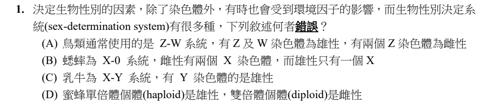
原卷PDF2 · 官方原答案PDF4 · 已核對生物釋疑PDF5下半部–9
官方採計：A 原答案：A
未列於已取得110生物釋疑PDF5下半部–9；依同年度原答案PDF4採計
主分類：Ch15 The Chromosomal Basis of Inheritance
15.2 / The Chromosomal Basis of Sex
目錄行942；條目起始印刷頁298；實際目錄 PDF39
主分類理由：15.2 / The Chromosomal Basis of Sex：四種性別決定系統的雌雄染色體組合是直接判斷標的。
次分類理由：無另列最小次條目；題目沒有性聯疾病的遺傳機率；直接對照15.2性別染色體基礎圖可確認A，主條目足以涵蓋四組選項。
科學說明：A把ZW系統雌雄倒置；標準模型為雌ZW、雄ZZ。XY、X0與蜂類單雙倍體依本地圖15.6比較，不把該蜂類簡圖推成所有物種及特殊倍性個體的無例外規則。
來源涵蓋範圍：本地Campbell正文支援所列分類原理；原題及同年度釋疑的假設與措辭限制另見科學說明。
教材正文：印刷298／PDF347、印刷299／PDF348
補充來源：本題未另列課本外來源
另行比較：性聯遺傳與性別染色體系統
題目沒有性聯疾病的遺傳機率；直接對照15.2性別染色體基礎圖可確認A，主條目足以涵蓋四組選項。
結論：證據確認，分類疑義已解決。完整覆核紀錄
Q02 · 15.4 / Alterations of Chromosome Structure 正式分類
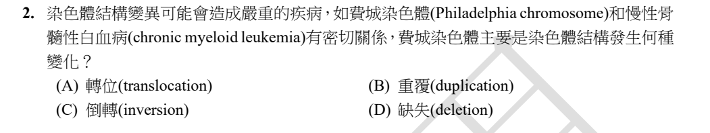
原卷PDF2 · 官方原答案PDF4 · 已核對生物釋疑PDF5下半部–9
官方採計：A 原答案：A
未列於已取得110生物釋疑PDF5下半部–9；依同年度原答案PDF4採計
主分類：Ch15 The Chromosomal Basis of Inheritance
15.4 / Alterations of Chromosome Structure
目錄行971；條目起始印刷頁307；實際目錄 PDF39
次分類：Ch15 The Chromosomal Basis of Inheritance
15.4 / Human Conditions Due to Chromosomal Alterations
目錄行974；條目起始印刷頁308；實際目錄 PDF39
主分類理由：15.4 / Alterations of Chromosome Structure：費城染色體是染色體片段易位的結構改變。
次分類理由：15.4 / Human Conditions Due to Chromosomal Alterations：費城染色體造成慢性骨髓性白血病的具名案例。
科學說明：官方A。9與22號染色體易位形成費城染色體及融合基因；不是互換染色單體的正常交叉互換，也不是重複、倒位。
來源涵蓋範圍：本地Campbell正文支援所列分類原理；原題及同年度釋疑的假設與措辭限制另見科學說明。
教材正文：印刷307／PDF356、印刷308／PDF357、印刷309／PDF358
補充來源：本題未另列課本外來源
另行比較：染色體數目改變與染色體結構改變
題圖為具名結構異常；保留15.4結構條目為主、同Concept人類疾病案例為次，不能因同章而刪除次條目。
結論：證據確認，分類疑義已解決。完整覆核紀錄
Q03 · 6.1 / Microscopy 正式分類
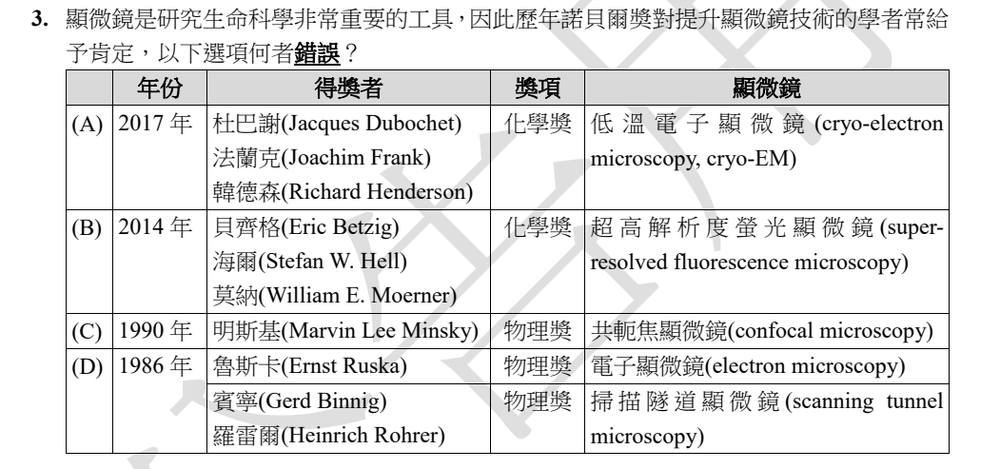
原卷PDF2 · 官方原答案PDF4 · 已核對生物釋疑PDF5下半部–9
官方採計：C 原答案：C
未列於已取得110生物釋疑PDF5下半部–9；依同年度原答案PDF4採計
主分類：Ch06 A Tour of the Cell
6.1 / Microscopy
目錄行313；條目起始印刷頁94；實際目錄 PDF36
主分類理由：6.1 / Microscopy：完整表格比較顯微技術及其科學史，屬顯微術。
次分類理由：無另列最小次條目；看完整四列表格後以官方得獎資料逐年核對；題目不在考細胞構造的辨認，最小主條目定於6.1 Microscopy。
科學說明：官方C。1990物理獎得主為Friedman、Kendall與Taylor，並非Minsky；2017冷凍電顯、2014超解析螢光、1986電顯與掃描穿隧顯微鏡的配對有Nobel官方資料支持。原表拼字及獎項欄不改。
來源涵蓋範圍：本地Campbell支援所列分類框架；具名外部事件／機制／科學界線由列示來源補充，實讀範圍見來源紀錄。
教材正文：印刷94／PDF143、印刷95／PDF144、印刷96／PDF145
補充來源：S01
另行比較：顯微術與科學探究概論
看完整四列表格後以官方得獎資料逐年核對；題目不在考細胞構造的辨認，最小主條目定於6.1 Microscopy。
結論：證據確認，分類疑義已解決。完整覆核紀錄
Q04 · 21.6 / Comparing Genomes 正式分類
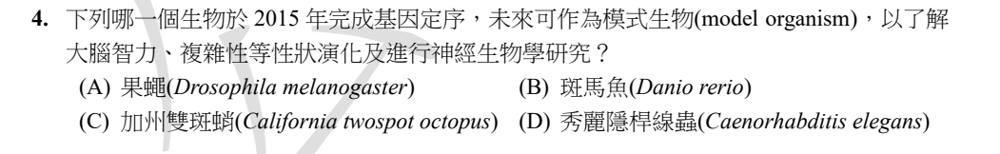
原卷PDF2 · 官方原答案PDF4 · 已核對生物釋疑PDF5下半部–9
官方採計：C 原答案：C
未列於已取得110生物釋疑PDF5下半部–9；依同年度原答案PDF4採計
主分類：Ch21 Genomes and Their Evolution
21.6 / Comparing Genomes
目錄行1359；條目起始印刷頁459；實際目錄 PDF40
次分類：Ch33 An Introduction to Invertebrates
33.3 / Molluscs
目錄行2120；條目起始印刷頁699；實際目錄 PDF44
主分類理由：21.6 / Comparing Genomes：2015章魚基因體定序用於物種與複雜性狀比較。
次分類理由：33.3 / Molluscs：加州雙斑蛸為頭足類軟體動物，是定序研究的物種背景。
科學說明：官方C。Albertin等2015原始論文研究Octopus bimaculoides基因體；題目的模式生物及智力研究是研究前景，不表示只憑完成定序就證明智力成因。
來源涵蓋範圍：本地Campbell支援所列分類框架；具名外部事件／機制／科學界線由列示來源補充，實讀範圍見來源紀錄。
教材正文：印刷459／PDF508、印刷460／PDF509、印刷461／PDF510、印刷462／PDF511、印刷463／PDF512、印刷701／PDF750、印刷702／PDF751
補充來源：S02
另行比較：神經系統演化、基因體比較與軟體動物分類
年份及物種由原始定序論文解決；問題所需的主要知識是基因體比較，軟體動物為次，不以神經科學廣章替代。
結論：證據確認，分類疑義已解決。完整覆核紀錄
Q05 · 19.1 / Structure of Viruses 正式分類
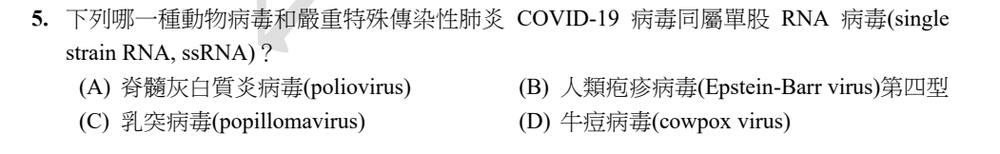
原卷PDF2 · 官方原答案PDF4 · 已核對生物釋疑PDF5下半部–9
官方採計：A 原答案：A
未列於已取得110生物釋疑PDF5下半部–9；依同年度原答案PDF4採計
主分類：Ch19 Viruses
19.1 / Structure of Viruses
目錄行1189；條目起始印刷頁399；實際目錄 PDF40
次分類：Ch19 Viruses
19.2 / Replicative Cycles of Animal Viruses
目錄行1202；條目起始印刷頁404；實際目錄 PDF40
主分類理由：19.1 / Structure of Viruses：比較病毒核酸是DNA或RNA、單股或雙股。
次分類理由：19.2 / Replicative Cycles of Animal Viruses：動物RNA病毒的複製類型補足polio與冠狀病毒比較。
科學說明：官方A。Poliovirus與SARS-CoV-2為正股單股RNA病毒；其餘列出的EBV、乳突及牛痘病毒為雙股DNA類型。本地表19.1及ICTV支援，原題single strain RNA、popillomavirus均保留，不默改原文。
來源涵蓋範圍：本地Campbell支援所列分類框架；具名外部事件／機制／科學界線由列示來源補充，實讀範圍見來源紀錄。
教材正文：印刷399／PDF448、印刷400／PDF449、印刷404／PDF453、印刷405／PDF454、印刷406／PDF455
補充來源：S25
Q06 · 30.4 / Threats to Plant Diversity 正式分類
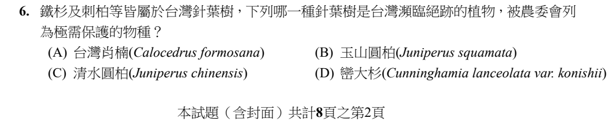
原卷PDF2 · 官方原答案PDF4 · 已核對生物釋疑PDF5下半部–9
官方採計：C 原答案：C
未列於已取得110生物釋疑PDF5下半部–9；依同年度原答案PDF4採計
主分類：Ch30 Plant Diversity II: The Evolution of Seed Plants
30.4 / Threats to Plant Diversity
目錄行1955；條目起始印刷頁651；實際目錄 PDF43
次分類：Ch56 Conservation Biology and Global Change
56.2 / Extinction Risks in Small Populations
目錄行3755；條目起始印刷頁1266；實際目錄 PDF50
次分類：Ch30 Plant Diversity II: The Evolution of Seed Plants
30.2 / Gymnosperm Diversity
目錄行1932；條目起始印刷頁641；實際目錄 PDF43
主分類理由：30.4 / Threats to Plant Diversity：題幹核心是台灣植物受威脅及保育身分。
次分類理由：56.2 / Extinction Risks in Small Populations：小族群滅絕風險提供瀕危保育概念；30.2 / Gymnosperm Diversity：裸子植物多樣性確認針葉樹背景。
科學說明：官方C。官方植物資料使用清水圓柏Juniperus chinensis var. taiwanensis，原卷只印J. chinensis，兩者精度差異保留。歷史珍稀／需保護名單不直接等同今天的IUCN分級或一項未查的現行法律地位。
來源涵蓋範圍：本地Campbell支援所列分類框架；具名外部事件／機制／科學界線由列示來源補充，實讀範圍見來源紀錄。
教材正文：印刷641／PDF690、印刷642／PDF691、印刷643／PDF692、印刷651／PDF700、印刷652／PDF701、印刷1266／PDF1315、印刷1267／PDF1316
補充來源：S03
另行比較：裸子植物鑑別與植物保育
本地30.4威脅條目配合台灣官方清水圓柏資料；不是僅靠針葉樹共通特徵猜選項，族群風險與裸子植物各留次條目。
結論：證據確認，分類疑義已解決。完整覆核紀錄
Q07 · 12.2 / The Mitotic Spindle: A Closer Look 正式分類
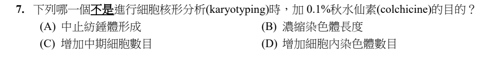
原卷PDF3 · 官方原答案PDF4 · 已核對生物釋疑PDF5下半部–9
官方採計：D 原答案：D
未列於已取得110生物釋疑PDF5下半部–9；依同年度原答案PDF4採計
主分類：Ch12 The Cell Cycle
12.2 / The Mitotic Spindle: A Closer Look
目錄行773；條目起始印刷頁240；實際目錄 PDF38
次分類：Ch06 A Tour of the Cell
6.6 / Components of the Cytoskeleton
目錄行381；條目起始印刷頁113；實際目錄 PDF36
主分類理由：12.2 / The Mitotic Spindle: A Closer Look：秋水仙素抑制紡錘體使分裂中期可供核型觀察。
次分類理由：6.6 / Components of the Cytoskeleton：微管為紡錘體骨架，藥物作用對象是tubulin系統。
科學說明：官方D。中期阻滯有利觀察凝縮染色體；核型製備加藥目的不是增加染色體數。長時間阻斷分裂可能造成多倍體，與本題製片目的須分開。
來源涵蓋範圍：本地Campbell正文支援所列分類原理；原題及同年度釋疑的假設與措辭限制另見科學說明。
教材正文：印刷113／PDF162、印刷114／PDF163、印刷240／PDF289、印刷241／PDF290
補充來源：本題未另列課本外來源
另行比較：核型分析、染色體倍性與紡錘體
依題目「目的」限制，D與操作目的不符；不能把誘導多倍體的其他用途當成此題目的。
結論：證據確認，分類疑義已解決。完整覆核紀錄
Q08 · 35.5 / Morphogenesis and Pattern Formation 正式分類
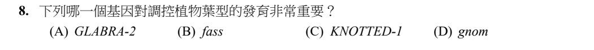
原卷PDF3 · 官方原答案PDF4 · 已核對生物釋疑PDF5下半部–9
官方採計：C 原答案：C
未列於已取得110生物釋疑PDF5下半部–9；依同年度原答案PDF4採計
主分類：Ch35 Vascular Plant Structure, Growth, and Development
35.5 / Morphogenesis and Pattern Formation
目錄行2329；條目起始印刷頁777；實際目錄 PDF44
主分類理由：35.5 / Morphogenesis and Pattern Formation：KNOTTED-1改變葉與小葉的形態圖樣。
次分類理由：無另列最小次條目；讀35.5的KNOTTED-1圖35.29及鄰近根毛案例；葉型圖樣而非下一條目的開花遺傳控制，主分類確定。
科學說明：官方C。本地印刷778直接敘述KNOTTED-1影響葉形，過量表達可產生super-compound leaves；GLABRA-2重點是根毛命運，不能因都是發育調控基因而混為同一答案。
來源涵蓋範圍：本地Campbell正文支援所列分類原理；原題及同年度釋疑的假設與措辭限制另見科學說明。
教材正文：印刷777／PDF826、印刷778／PDF827
補充來源：本題未另列課本外來源
另行比較：葉型圖樣與花器官身分
讀35.5的KNOTTED-1圖35.29及鄰近根毛案例；葉型圖樣而非下一條目的開花遺傳控制，主分類確定。
結論：證據確認，分類疑義已解決。完整覆核紀錄
Q09 · 26.2 / Sorting Homology from Analogy 正式分類
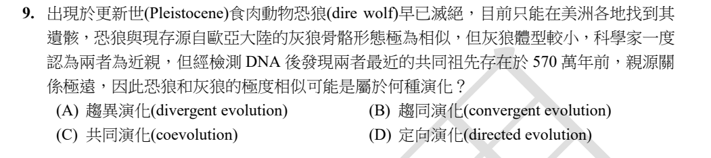
原卷PDF3 · 官方原答案PDF4 · 已核對生物釋疑PDF5下半部–9
官方採計：B 原答案：B
未列於已取得110生物釋疑PDF5下半部–9；依同年度原答案PDF4採計
主分類：Ch26 Phylogeny and the Tree of Life
26.2 / Sorting Homology from Analogy
目錄行1649；條目起始印刷頁558；實際目錄 PDF42
次分類：Ch26 Phylogeny and the Tree of Life
26.2 / Evaluating Molecular Homologies
目錄行1652；條目起始印刷頁559；實際目錄 PDF42
主分類理由：26.2 / Sorting Homology from Analogy：骨骼相似但分子親緣遠用以辨認類似與同源。
次分類理由：26.2 / Evaluating Molecular Homologies：DNA親緣證據用於檢驗形態所推的親近關係。
科學說明：官方B，依題設及2021研究為趨同演化。保留570萬年前這個研究脈絡，不把形態相似一律當成同源，也不把2021推論冒稱日後不可能修訂的最終系統樹。
來源涵蓋範圍：本地Campbell支援所列分類框架；具名外部事件／機制／科學界線由列示來源補充，實讀範圍見來源紀錄。
教材正文：印刷558／PDF607、印刷559／PDF608
補充來源：S04
另行比較：同源、共同演化與趨同
沒有兩物種相互選擇證據，不是共同演化；題設分子親緣與形態落差對應26.2類似／同源及分子比較。
結論：證據確認，分類疑義已解決。完整覆核紀錄
Q10 · 35.1 / Common Types of Plant Cells 正式分類
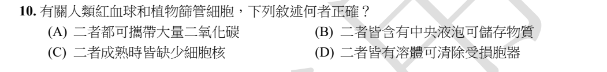
原卷PDF3 · 官方原答案PDF4 · 已核對生物釋疑PDF5下半部–9
官方採計：C 原答案：C
未列於已取得110生物釋疑PDF5下半部–9；依同年度原答案PDF4採計
主分類：Ch35 Vascular Plant Structure, Growth, and Development
35.1 / Common Types of Plant Cells
目錄行2289；條目起始印刷頁763；實際目錄 PDF44
次分類：Ch42 Circulation and Gas Exchange
42.4 / Blood Composition and Function
目錄行2802；條目起始印刷頁934；實際目錄 PDF46
主分類理由：35.1 / Common Types of Plant Cells：成熟篩管細胞的去核構造是植物側的核心比較。
次分類理由：42.4 / Blood Composition and Function：人類成熟紅血球無核的動物側證據。
科學說明：官方C。人類成熟紅血球與被子植物成熟篩管分子皆缺細胞核；植物伴細胞支援篩管，紅血球為氣體運輸專化。不能把所有動物紅血球都無核，亦不能拿無核血小板代替原題紅血球。
來源涵蓋範圍：本地Campbell正文支援所列分類原理；原題及同年度釋疑的假設與措辭限制另見科學說明。
教材正文：印刷763／PDF812、印刷764／PDF813、印刷765／PDF814、印刷934／PDF983、印刷935／PDF984
補充來源：本題未另列課本外來源
Q11 · 39.3 / Photoperiodism and Responses to Seasons 正式分類
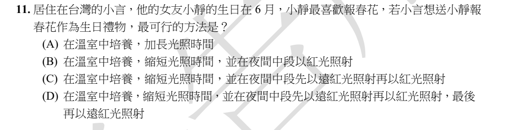
官方採計：D 原答案：D
維持原答案D
主分類：Ch39 Plant Responses to Internal and External Signals
39.3 / Photoperiodism and Responses to Seasons
目錄行2576；條目起始印刷頁859；實際目錄 PDF45
次分類：Ch39 Plant Responses to Internal and External Signals
39.3 / Phytochrome Photoreceptors
目錄行2567；條目起始印刷頁856；實際目錄 PDF45
主分類理由：39.3 / Photoperiodism and Responses to Seasons：夜長及夜間紅／遠紅光控制開花是直接考點。
次分類理由：39.3 / Phytochrome Photoreceptors：光敏素紅光與遠紅光可逆轉換說明最後一段遠紅光作用。
科學說明：官方釋疑維持D。依短日植物模型，縮短日照並以最後遠紅光逆轉紅光夜中斷效果。原題未定報春花的種、品種、溫度及生育階段；釋疑指出已形成可見花芽的研究不能否定花芽誘導受環境影響，但不等於已證明所有Primula皆屬相同短日模型。官方引12e912–914，與本地12e859–861不同，兩者頁碼分記。
來源涵蓋範圍：本地Campbell正文支援所列分類原理；原題及同年度釋疑的假設與措辭限制另見科學說明。
教材正文：印刷856／PDF905、印刷857／PDF906、印刷859／PDF908、印刷860／PDF909、印刷861／PDF910
補充來源：本題未另列課本外來源
另行比較：光敏素受器、光週期與物種特定栽培反應
D為官方採計；本題分類依夜長／光可逆機制確認，不靠替原題補上未提供的種與溫度消除科學限制。
結論：證據確認，分類疑義已解決。完整覆核紀錄
Q12 · 38.2 / Totipotency, Vegetative Reproduction, and Tissue Culture 正式分類
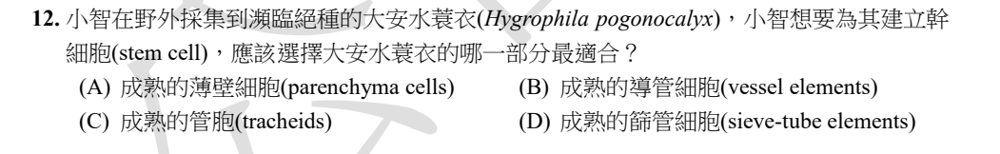
原卷PDF3 · 官方原答案PDF4 · 已核對生物釋疑PDF5下半部–9
官方採計：A 原答案：A
未列於已取得110生物釋疑PDF5下半部–9；依同年度原答案PDF4採計
主分類：Ch38 Angiosperm Reproduction and Biotechnology
38.2 / Totipotency, Vegetative Reproduction, and Tissue Culture
目錄行2517；條目起始印刷頁835；實際目錄 PDF45
次分類：Ch35 Vascular Plant Structure, Growth, and Development
35.1 / Common Types of Plant Cells
目錄行2289；條目起始印刷頁763；實際目錄 PDF44
主分類理由：38.2 / Totipotency, Vegetative Reproduction, and Tissue Culture：由可再分化細胞建立培養及再生個體屬全能性與組織培養。
次分類理由：35.1 / Common Types of Plant Cells：四個細胞選項的存活、細胞核及再分裂能力比較。
科學說明：官方A。成熟薄壁細胞仍可在適宜條件下再分裂、再分化；成熟導管及管胞通常死亡，成熟篩管缺核。「建立幹細胞」是原題用語，不把它等同直接取得動物型胚胎幹細胞，也不保證任何培養條件皆成功。
來源涵蓋範圍：本地Campbell正文支援所列分類原理；原題及同年度釋疑的假設與措辭限制另見科學說明。
教材正文：印刷763／PDF812、印刷764／PDF813、印刷765／PDF814、印刷835／PDF884、印刷836／PDF885
補充來源：本題未另列課本外來源
另行比較：分生組織與成熟薄壁細胞的再生
題目選項没有分生組織，薄壁細胞全能性及培養證據能解題，故38.2為主、35.1細胞類型為次。
結論：證據確認，分類疑義已解決。完整覆核紀錄
Q13 · 35.1 / Common Types of Plant Cells 正式分類
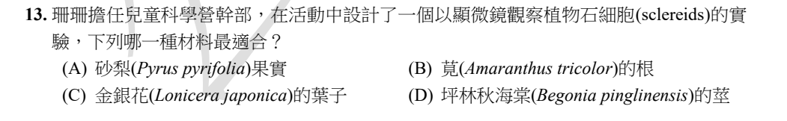
原卷PDF3 · 官方原答案PDF4 · 已核對生物釋疑PDF5下半部–9
官方採計：A 原答案：A
未列於已取得110生物釋疑PDF5下半部–9；依同年度原答案PDF4採計
主分類：Ch35 Vascular Plant Structure, Growth, and Development
35.1 / Common Types of Plant Cells
目錄行2289；條目起始印刷頁763；實際目錄 PDF44
主分類理由：35.1 / Common Types of Plant Cells：石細胞是厚壁細胞的一型，梨肉砂質感為典型材料。
次分類理由：無另列最小次條目；觀察材料的直接證據是梨肉石細胞，最小條目35.1 Common Types of Plant Cells足以涵蓋，不泛掛整章植物形態。
科學說明：官方A。本地印刷764–765的石細胞與梨果肉案例支持；其餘器官可能有支持組織，不可用「完全沒有石細胞」作不必要的絕對推論。
來源涵蓋範圍：本地Campbell正文支援所列分類原理；原題及同年度釋疑的假設與措辭限制另見科學說明。
教材正文：印刷763／PDF812、印刷764／PDF813、印刷765／PDF814
補充來源：本題未另列課本外來源
另行比較：石細胞與纖維、組織系統
觀察材料的直接證據是梨肉石細胞，最小條目35.1 Common Types of Plant Cells足以涵蓋，不泛掛整章植物形態。
結論：證據確認，分類疑義已解決。完整覆核紀錄
Q14 · 43.1 / Innate Immunity of Vertebrates 正式分類
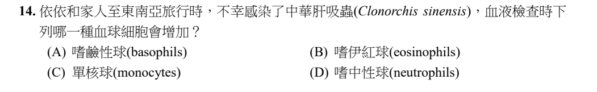
官方採計：B 原答案：B
維持原答案B
主分類：Ch43 The Immune System
43.1 / Innate Immunity of Vertebrates
目錄行2870；條目起始印刷頁954；實際目錄 PDF47
次分類：Ch33 An Introduction to Invertebrates
33.3 / Flatworms
目錄行2111；條目起始印刷頁694；實際目錄 PDF44
主分類理由：43.1 / Innate Immunity of Vertebrates：嗜伊紅球對多細胞寄生蟲的先天防禦是判斷依據。
次分類理由：33.3 / Flatworms：中華肝吸蟲的扁形動物寄生性辨識。
科學說明：官方與釋疑皆B。本地印刷955直接描述eosinophils釋放酵素對抗寄生蠕蟲。釋疑討論的特定小鼠關節炎模型不能直接替代一般感染題；也不表示其他白血球絕無參與。官方引12e1103，本地對應955，保留版本頁碼差異。
來源涵蓋範圍：本地Campbell正文支援所列分類原理；原題及同年度釋疑的假設與措辭限制另見科學說明。
教材正文：印刷694／PDF743、印刷695／PDF744、印刷696／PDF745、印刷954／PDF1003、印刷955／PDF1004、印刷956／PDF1005
補充來源：本題未另列課本外來源
另行比較：先天與後天免疫；嗜鹼與嗜伊紅球
檢查完整白血球選項與同年度釋疑；主要是43.1脊椎先天防禦，寄生蟲分類僅為次條目。
結論：證據確認，分類疑義已解決。完整覆核紀錄
Q15 · 35.5 / Genetic Control of Flowering 正式分類
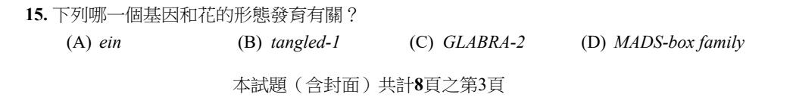
原卷PDF3 · 官方原答案PDF4 · 已核對生物釋疑PDF5下半部–9
官方採計：D 原答案：D
未列於已取得110生物釋疑PDF5下半部–9；依同年度原答案PDF4採計
主分類：Ch35 Vascular Plant Structure, Growth, and Development
35.5 / Genetic Control of Flowering
目錄行2338；條目起始印刷頁779；實際目錄 PDF44
主分類理由：35.5 / Genetic Control of Flowering：MADS-box蛋白參與花器官身分及形態發育。
次分類理由：無另列最小次條目；與Q8的KNOTTED-1葉型區分；MADS-box花器官案例支持35.5 Genetic Control of Flowering。
科學說明：官方D。本地35.5開花控制配合印刷778的MADS-box說明；不把所有MADS-box基因限縮為只有花功能，也不說所有花器官身分基因均為MADS-box。
來源涵蓋範圍：本地Campbell正文支援所列分類原理；原題及同年度釋疑的假設與措辭限制另見科學說明。
教材正文：印刷778／PDF827、印刷779／PDF828、印刷780／PDF829
補充來源：本題未另列課本外來源
另行比較：葉形、根毛與花器官控制
與Q8的KNOTTED-1葉型區分；MADS-box花器官案例支持35.5 Genetic Control of Flowering。
結論：證據確認，分類疑義已解決。完整覆核紀錄
Q16 · 39.5 / Defenses Against Pathogens 正式分類
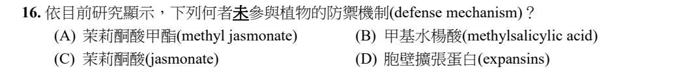
原卷PDF4 · 官方原答案PDF4 · 已核對生物釋疑PDF5下半部–9
官方採計：D 原答案：D
未列於已取得110生物釋疑PDF5下半部–9；依同年度原答案PDF4採計
主分類：Ch39 Plant Responses to Internal and External Signals
39.5 / Defenses Against Pathogens
目錄行2596；條目起始印刷頁866；實際目錄 PDF45
次分類：Ch39 Plant Responses to Internal and External Signals
39.5 / Defenses Against Herbivores
目錄行2599；條目起始印刷頁867；實際目錄 PDF45
次分類：Ch35 Vascular Plant Structure, Growth, and Development
35.5 / Growth: Cell Division and Cell Expansion
目錄行2326；條目起始印刷頁776；實際目錄 PDF44
主分類理由：39.5 / Defenses Against Pathogens：JA、MeSA等植物防禦訊號及病原反應構成題幹比較。
次分類理由：39.5 / Defenses Against Herbivores：抗植食者防禦補足茉莉酮酸類作用；35.5 / Growth: Cell Division and Cell Expansion：細胞擴張條目說明expansin常見功能。
科學說明：官方D照存。Expansin是細胞壁鬆弛的常見教材代表，並非可據此斷言未參與任何防禦。2013 Arabidopsis EXLA2研究已顯示與壞死營養病原抗性及逆境相關，因此原題「依目前研究」「未參與」具有過度概括問題；研究的是expansin-like A2，不能推成所有家族成員相同。
來源涵蓋範圍：本地Campbell支援所列分類框架；具名外部事件／機制／科學界線由列示來源補充，實讀範圍見來源紀錄。
教材正文：印刷776／PDF825、印刷777／PDF826、印刷866／PDF915、印刷867／PDF916、印刷868／PDF917
補充來源：S05
另行比較：細胞壁擴張與防禦是否互斥
加入具名原始研究後，防禦主題與expansin對照的分類已解決；保留官方D及科學反例，不改題文或用泛稱生長功能抹去反例。
結論：證據確認，分類疑義已解決。完整覆核紀錄
Q17 · 39.4 / Environmental Stresses 正式分類
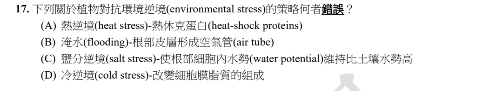
原卷PDF4 · 官方原答案PDF4 · 已核對生物釋疑PDF5下半部–9
官方採計：C 原答案：C
未列於已取得110生物釋疑PDF5下半部–9；依同年度原答案PDF4採計
主分類：Ch39 Plant Responses to Internal and External Signals
39.4 / Environmental Stresses
目錄行2589；條目起始印刷頁862；實際目錄 PDF45
次分類：Ch36 Resource Acquisition and Transport in Vascular Plants
36.2 / Short-Distance Transport of Water Across Plasma Membranes
目錄行2365；條目起始印刷頁788；實際目錄 PDF45
主分類理由：39.4 / Environmental Stresses：四種非生物逆境反應的比較。
次分類理由：36.2 / Short-Distance Transport of Water Across Plasma Membranes：水依水勢梯度移動，解釋鹽逆境選項方向錯誤。
科學說明：官方C。為由土壤吸水，根細胞水勢需較土壤低而非較高；本地印刷865明列維持更負的細胞水勢。熱休克蛋白、淹水通氣及冷時膜脂變化分別對應其他選項，不把水勢與單純離子濃度混同。
來源涵蓋範圍：本地Campbell正文支援所列分類原理；原題及同年度釋疑的假設與措辭限制另見科學說明。
教材正文：印刷788／PDF837、印刷789／PDF838、印刷790／PDF839、印刷862／PDF911、印刷863／PDF912、印刷864／PDF913、印刷865／PDF914
補充來源：本題未另列課本外來源
另行比較：生物防禦與非生物逆境
鹽、水、熱、冷是39.4環境逆境，並非39.5病原防禦；36.2水勢補足C的判斷方向。
結論：證據確認，分類疑義已解決。完整覆核紀錄
Q18 · 43.4 / Cancer and Immunity 正式分類
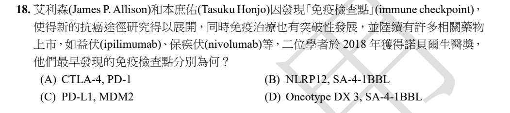
原卷PDF4 · 官方原答案PDF4 · 已核對生物釋疑PDF5下半部–9
官方採計：A 原答案：A
未列於已取得110生物釋疑PDF5下半部–9；依同年度原答案PDF4採計
主分類：Ch43 The Immune System
43.4 / Cancer and Immunity
目錄行2930；條目起始印刷頁974；實際目錄 PDF47
主分類理由：43.4 / Cancer and Immunity：免疫檢查點抑制與抗腫瘤治療。
次分類理由：無另列最小次條目；具名檢查點及諾獎背景仍以43.4癌症與免疫最貼題，不能因藥名而歸為病原免疫。
科學說明：官方A，分別為CTLA-4與PD-1。Nobel官方2018資料支持相關貢獻；Allison的重要工作是揭示並應用CTLA-4負調控解除來抗癌，不把「最早發現」擴寫成他最先克隆CTLA-4分子。
來源涵蓋範圍：本地Campbell支援所列分類框架；具名外部事件／機制／科學界線由列示來源補充，實讀範圍見來源紀錄。
教材正文：印刷974／PDF1023、印刷975／PDF1024
補充來源：S06
Q19 · 45.1 / Cellular Hormone Response Pathways 正式分類
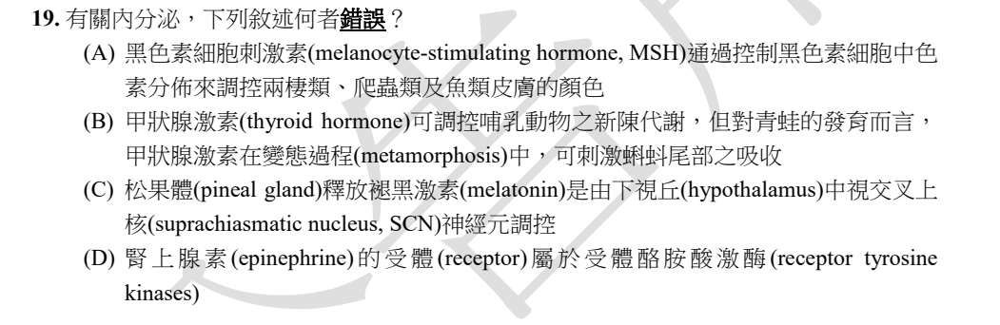
原卷PDF4 · 官方原答案PDF4 · 已核對生物釋疑PDF5下半部–9
官方採計：D 原答案：D
未列於已取得110生物釋疑PDF5下半部–9；依同年度原答案PDF4採計
主分類：Ch45 Hormones and the Endocrine System
45.1 / Cellular Hormone Response Pathways
目錄行3004；條目起始印刷頁1002；實際目錄 PDF47
次分類：Ch11 Cell Communication
11.2 / Receptors in the Plasma Membrane
目錄行708；條目起始印刷頁217；實際目錄 PDF38
主分類理由：45.1 / Cellular Hormone Response Pathways：不同化學性質荷爾蒙如何經受器產生反應，D的受器分類為判別點。
次分類理由：11.2 / Receptors in the Plasma Membrane：GPCR與RTK的結構和訊息傳遞差別。
科學說明：官方D。腎上腺素經腎上腺素能GPCR而非RTK；MSH色素分布、甲狀腺素與蝌蚪變態、SCN與褪黑激素屬題中其他調節範例。不以所有胺類必用同一受器推論。
來源涵蓋範圍：本地Campbell正文支援所列分類原理；原題及同年度釋疑的假設與措辭限制另見科學說明。
教材正文：印刷217／PDF266、印刷218／PDF267、印刷219／PDF268、印刷1002／PDF1051、印刷1003／PDF1052
補充來源：本題未另列課本外來源
另行比較：內分泌腺列表與受器路徑
判錯所需是45.1細胞荷爾蒙反應及11.2受器型別；完整A–D已讀，無須將每個旁及腺體機械加為次章。
結論：證據確認，分類疑義已解決。完整覆核紀錄
Q20 · 45.1 / Chemical Classes of Hormones 正式分類
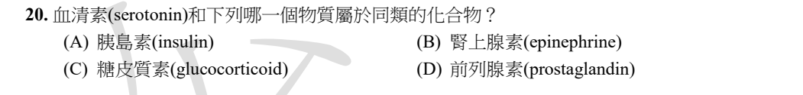
原卷PDF4 · 官方原答案PDF4 · 已核對生物釋疑PDF5下半部–9
官方採計：B 原答案：B
未列於已取得110生物釋疑PDF5下半部–9；依同年度原答案PDF4採計
主分類：Ch45 Hormones and the Endocrine System
45.1 / Chemical Classes of Hormones
目錄行3001；條目起始印刷頁1001；實際目錄 PDF47
次分類：Ch48 Neurons, Synapses, and Signaling
48.4 / Neurotransmitters
目錄行3231；條目起始印刷頁1080；實際目錄 PDF48
主分類理由：45.1 / Chemical Classes of Hormones：serotonin與epinephrine都屬胺類，與胜肽、類固醇及脂質衍生物區別。
次分類理由：48.4 / Neurotransmitters：血清素與腎上腺素作為生物胺傳遞物的具名比較。
科學說明：官方B。兩者同屬生物胺；血清素由tryptophan衍生，腎上腺素由tyrosine衍生。不能把血清素說成catecholamine，這裡「同類」是較高層的胺類化學分類。
來源涵蓋範圍：本地Campbell正文支援所列分類原理；原題及同年度釋疑的假設與措辭限制另見科學說明。
教材正文：印刷1001／PDF1050、印刷1002／PDF1051、印刷1080／PDF1129、印刷1081／PDF1130
補充來源：本題未另列課本外來源
另行比較：胺類與兒茶酚胺
依本地45.1化學分類配合48.4具名神經傳遞物，解決分類層級；不是因兩者都是神經傳遞物就忽略化學結構。
結論：證據確認，分類疑義已解決。完整覆核紀錄
Q21 · 45.1 / Cellular Hormone Response Pathways 正式分類
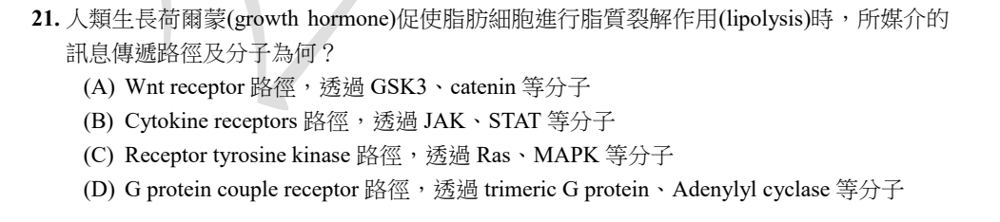
原卷PDF4 · 官方原答案PDF4 · 已核對生物釋疑PDF5下半部–9
官方採計：B 原答案：B
未列於已取得110生物釋疑PDF5下半部–9；依同年度原答案PDF4採計
主分類：Ch45 Hormones and the Endocrine System
45.1 / Cellular Hormone Response Pathways
目錄行3004；條目起始印刷頁1002；實際目錄 PDF47
次分類：Ch11 Cell Communication
11.3 / Signal Transduction Pathways
目錄行718；條目起始印刷頁221；實際目錄 PDF38
次分類：Ch45 Hormones and the Endocrine System
45.2 / Hormonal Regulation of Growth
目錄行3029；條目起始印刷頁1009；實際目錄 PDF47
主分類理由：45.1 / Cellular Hormone Response Pathways：GH藉膜受器啟動細胞反應，需辨認cytokine receptor路徑。
次分類理由：11.3 / Signal Transduction Pathways：受器後JAK／STAT訊號傳遞；45.2 / Hormonal Regulation of Growth：GH的生理功能背景。
科學說明：官方B。GHR為cytokine receptor並招募JAK2，進而活化STAT；受器本身不是具內在酪胺酸激酶的RTK。人類脂肪研究及STAT5/JAK2小鼠實驗支持此軸；下游可另涉及ERK等，不能把B讀成脂解只靠一條絕對排他的路徑。
來源涵蓋範圍：本地Campbell支援所列分類框架；具名外部事件／機制／科學界線由列示來源補充，實讀範圍見來源紀錄。
教材正文：印刷221／PDF270、印刷222／PDF271、印刷1002／PDF1051、印刷1003／PDF1052、印刷1009／PDF1058、印刷1010／PDF1059
補充來源：S07
另行比較：cytokine receptor與RTK；GH生長與脂解
以GHR分子類型而非有磷酸化就認作RTK；本地框架不足的具名GH脂解由原始研究補足，三個最小條目各保留角色。
結論：證據確認，分類疑義已解決。完整覆核紀錄
Q22 · 6.6 / Components of the Cytoskeleton 正式分類
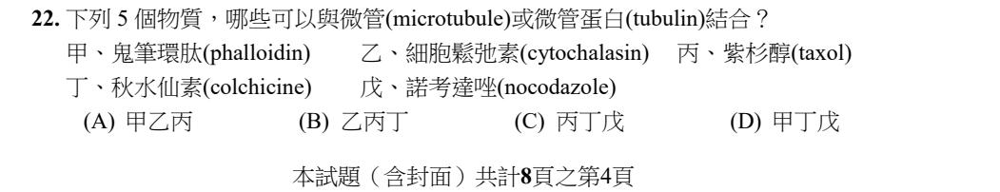
原卷PDF4 · 官方原答案PDF4 · 釋疑PDF5、釋疑PDF6
官方採計：C 原答案：C
維持原答案C
主分類：Ch06 A Tour of the Cell
6.6 / Components of the Cytoskeleton
目錄行381；條目起始印刷頁113；實際目錄 PDF36
主分類理由：6.6 / Components of the Cytoskeleton：五種骨架藥物與微管、肌動蛋白的結合對象比較。
次分類理由：無另列最小次條目；逐一核對五物質及釋疑PDF5–6，主分類6.6骨架組件明確；結合與效果證據分層保留，不把官方採計當成否認所有交互作用。
科學說明：官方與釋疑皆C：taxol、colchicine、nocodazole。Phalloidin與典型cytochalasin作用於actin系統。釋疑承認cytochalasin A能影響tubulin聚合，並區分結合實證、變性與間接效應；因此不寫成所有cytochalasin完全不影響微管。
來源涵蓋範圍：本地Campbell正文支援所列分類原理；原題及同年度釋疑的假設與措辭限制另見科學說明。
教材正文：印刷113／PDF162、印刷114／PDF163、印刷115／PDF164、印刷116／PDF165、印刷117／PDF166
補充來源：本題未另列課本外來源
另行比較：微管與微絲；結合證據與聚合影響
逐一核對五物質及釋疑PDF5–6，主分類6.6骨架組件明確；結合與效果證據分層保留，不把官方採計當成否認所有交互作用。
結論：證據確認，分類疑義已解決。完整覆核紀錄
Q23 · 56.3 / Establishing Protected Areas 正式分類
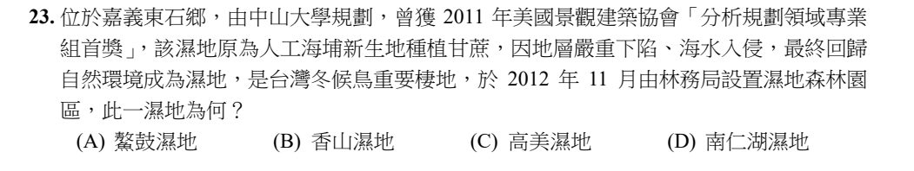
原卷PDF5 · 官方原答案PDF4 · 已核對生物釋疑PDF5下半部–9
官方採計：A 原答案：A
未列於已取得110生物釋疑PDF5下半部–9；依同年度原答案PDF4採計
主分類：Ch56 Conservation Biology and Global Change
56.3 / Establishing Protected Areas
目錄行3771；條目起始印刷頁1272；實際目錄 PDF50
次分類：Ch56 Conservation Biology and Global Change
56.2 / Critical Habitat
目錄行3758；條目起始印刷頁1269；實際目錄 PDF50
主分類理由：56.3 / Establishing Protected Areas：濕地森林園區的設置與棲地保全，是題幹具名案例。
次分類理由：56.2 / Critical Habitat：冬候鳥重要棲地及保育範圍的概念。
科學說明：官方A，鰲鼓濕地。ASLA 2011官方獎項頁與農政機關2012年11月24日開園資料互證。歷史時間及地名由官方外部資料補足，Campbell只支援保護區／重要棲地框架。
來源涵蓋範圍：本地Campbell支援所列分類框架；具名外部事件／機制／科學界線由列示來源補充，實讀範圍見來源紀錄。
教材正文：印刷1269／PDF1318、印刷1270／PDF1319、印刷1272／PDF1321、印刷1273／PDF1322
補充來源：S08
另行比較：生態復育與設置保護區
題幹雖述海埔地回復濕地，但主要辨認已設置森林園區及候鳥棲地，選56.3保護區，次56.2重要棲地；不冒稱課本列出鰲鼓。
結論：證據確認，分類疑義已解決。完整覆核紀錄
Q24 · 54.1 / Positive Interactions 正式分類
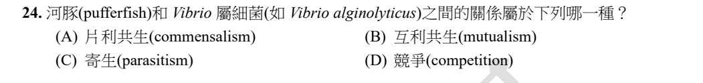
原卷PDF5 · 官方原答案PDF4 · 已核對生物釋疑PDF5下半部–9
官方採計：B 原答案：B
未列於已取得110生物釋疑PDF5下半部–9；依同年度原答案PDF4採計
主分類：Ch54 Community Ecology
54.1 / Positive Interactions
目錄行3604；條目起始印刷頁1220；實際目錄 PDF50
次分類：Ch27 Bacteria and Archaea
27.5 / Ecological Interactions
目錄行1764；條目起始印刷頁587；實際目錄 PDF42
主分類理由：54.1 / Positive Interactions：判斷河豚與細菌互動是互利或其他種間關係。
次分類理由：27.5 / Ecological Interactions：原核生物共生與生態作用提供細菌側的框架。
科學說明：官方B。考試採細菌獲棲位／資源、河豚受益於毒素的互利模型。1987原始研究在部分V. alginolyticus株檢出TTX或相關物質；它不直接證明每種Vibrio、每隻河豚必然互利，更不排除食物鏈累積或其他毒素來源。
來源涵蓋範圍：本地Campbell支援所列分類框架；具名外部事件／機制／科學界線由列示來源補充，實讀範圍見來源紀錄。
教材正文：印刷587／PDF636、印刷1220／PDF1269、印刷1221／PDF1270
補充來源：S09
另行比較：片利、寄生與互利
保留54.1正向互動為主、27.5原核生態為次；區分教材互利模型與具名菌株毒素實驗證據的範圍。
結論：證據確認，分類疑義已解決。完整覆核紀錄
Q25 · 54.1 / Exploitation 正式分類
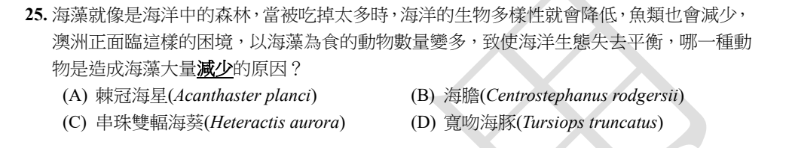
原卷PDF5 · 官方原答案PDF4 · 已核對生物釋疑PDF5下半部–9
官方採計：B 原答案：B
未列於已取得110生物釋疑PDF5下半部–9；依同年度原答案PDF4採計
主分類：Ch54 Community Ecology
54.1 / Exploitation
目錄行3601；條目起始印刷頁1217；實際目錄 PDF50
次分類：Ch54 Community Ecology
54.2 / Species with a Large Impact
目錄行3620；條目起始印刷頁1225；實際目錄 PDF50
主分類理由：54.1 / Exploitation：海膽大量取食海藻造成資源減少，屬植食利用關係。
次分類理由：54.2 / Species with a Large Impact：高影響物種改變群集與海藻林結構。
科學說明：官方B，Centrostephanus rodgersii。原始海藻林研究支持其過度放牧形成海膽荒地；棘冠海星主要取食珊瑚，不能因都是棘皮動物而代替海膽。後續研究用於科學查證，不作110官方釋疑。
來源涵蓋範圍：本地Campbell支援所列分類框架；具名外部事件／機制／科學界線由列示來源補充，實讀範圍見來源紀錄。
教材正文：印刷1217／PDF1266、印刷1218／PDF1267、印刷1219／PDF1268、印刷1225／PDF1274、印刷1226／PDF1275
補充來源：S10
另行比較：棘皮動物分類與群集植食效應
題目問造成海藻減少的取食者，54.1植食為主；54.2物種大影響補足群集改變，無必要再把整個動物分類章掛次。
結論：證據確認，分類疑義已解決。完整覆核紀錄
Q26 · 56.4 / Toxins in the Environment 正式分類
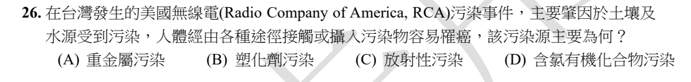
原卷PDF5 · 官方原答案PDF4 · 已核對生物釋疑PDF5下半部–9
官方採計：D 原答案：D
未列於已取得110生物釋疑PDF5下半部–9；依同年度原答案PDF4採計
主分類：Ch56 Conservation Biology and Global Change
56.4 / Toxins in the Environment
目錄行3784；條目起始印刷頁1275；實際目錄 PDF50
主分類理由：56.4 / Toxins in the Environment：土壤／水中持久性有毒有機物及暴露風險。
次分類理由：無另列最小次條目；原始官方事件檔案確定污染類別，本地56.4環境毒物提供最小框架；不把所有RCA污染物一概認定有相同生物放大能力。
科學說明：官方D。國家檔案RCA紀錄列三氯乙烯、四氯乙烯、二氯甲烷等含氯有機溶劑；不是放射性、塑化劑或單以重金屬為主要類別。實際污染涉及多種物質，D不是「唯一一種化學物」的主張。
來源涵蓋範圍：本地Campbell支援所列分類框架；具名外部事件／機制／科學界線由列示來源補充，實讀範圍見來源紀錄。
教材正文：印刷1275／PDF1324、印刷1276／PDF1325、印刷1277／PDF1326
補充來源：S11
另行比較：水污染、生物放大與特定毒物類別
原始官方事件檔案確定污染類別，本地56.4環境毒物提供最小框架；不把所有RCA污染物一概認定有相同生物放大能力。
結論：證據確認，分類疑義已解決。完整覆核紀錄
Q27 · 48.4 / Neurotransmitters 正式分類
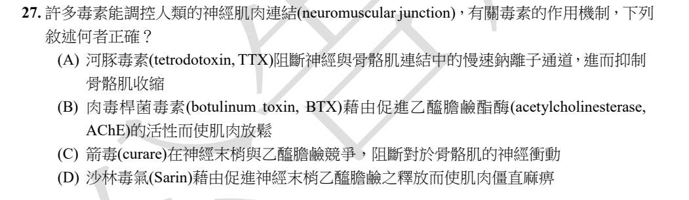
官方採計：C 原答案：C
維持原答案C
主分類：Ch48 Neurons, Synapses, and Signaling
48.4 / Neurotransmitters
目錄行3231；條目起始印刷頁1080；實際目錄 PDF48
次分類：Ch48 Neurons, Synapses, and Signaling
48.4 / Termination of Neurotransmitter Signaling
目錄行3225；條目起始印刷頁1079；實際目錄 PDF48
次分類：Ch50 Sensory and Motor Mechanisms
50.5 / Vertebrate Skeletal Muscle
目錄行3381；條目起始印刷頁1126；實際目錄 PDF49
主分類理由：48.4 / Neurotransmitters：箭毒與乙醯膽鹼受器的競爭及神經肌肉突觸傳遞。
次分類理由：48.4 / Termination of Neurotransmitter Signaling：乙醯膽鹼訊息如何終止對照沙林選項；50.5 / Vertebrate Skeletal Muscle：肌肉終板接受神經輸入。
科學說明：官方及釋疑C。箭毒阻斷運動終板突觸後nicotinic ACh receptor；原題「在神經末梢」位置措辭不精確，保留原文另註。TTX阻斷電壓閘控快速Na通道；BTX阻斷ACh釋放；沙林抑制AChE。TTX-resistant是較低敏感度，不能把釋疑「不會作用」擴成任意濃度皆零作用。
來源涵蓋範圍：本地Campbell正文支援所列分類原理；原題及同年度釋疑的假設與措辭限制另見科學說明。
教材正文：印刷1079／PDF1128、印刷1080／PDF1129、印刷1081／PDF1130、印刷1128／PDF1177、印刷1129／PDF1178
補充來源：本題未另列課本外來源
另行比較：突觸前釋放、突觸後受器與降解
四種毒素作用階段分開比較，最小主條目48.4傳遞物，保留訊息終止及骨骼肌接合處為次；C採計與位置限制分記。
結論：證據確認，分類疑義已解決。完整覆核紀錄
Q28 · 6.4 / The Golgi Apparatus: Shipping and Receiving Center 正式分類
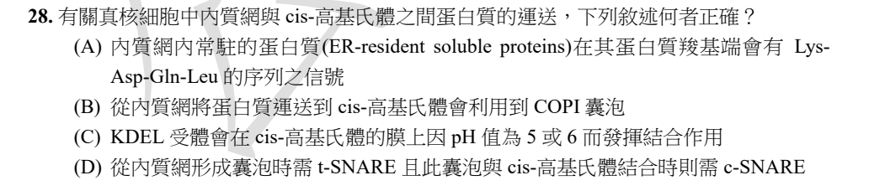
原卷PDF5 · 官方原答案PDF4 · 已核對生物釋疑PDF5下半部–9
官方採計：C 原答案：C
未列於已取得110生物釋疑PDF5下半部–9；依同年度原答案PDF4採計
主分類：Ch06 A Tour of the Cell
6.4 / The Golgi Apparatus: Shipping and Receiving Center
目錄行346；條目起始印刷頁105；實際目錄 PDF36
次分類：Ch06 A Tour of the Cell
6.4 / The Endoplasmic Reticulum: Biosynthetic Factory
目錄行343；條目起始印刷頁104；實際目錄 PDF36
主分類理由：6.4 / The Golgi Apparatus: Shipping and Receiving Center：cis-Golgi辨認KDEL並將逃逸ER蛋白回收，是高基氏體收送功能。
次分類理由：6.4 / The Endoplasmic Reticulum: Biosynthetic Factory：ER常駐蛋白與順向輸送提供起點及返回目的地。
科學說明：官方C。KDEL正確為Lys-Asp-Glu-Leu，A原印Gln；ER到Golgi主要COPII、回收COPI。雞KDEL受器結構與結合研究支持較酸性Golgi結合／ER釋放機制。原題pH5或6不可當成所有cis-Golgi的固定實測pH；SNARE通常區分v與t，D的c-SNARE原字不改。
來源涵蓋範圍：本地Campbell支援所列分類框架；具名外部事件／機制／科學界線由列示來源補充，實讀範圍見來源紀錄。
教材正文：印刷104／PDF153、印刷105／PDF154、印刷106／PDF155
補充來源：S12
另行比較：ER合成與Golgi回收；Gln/Glu及COPI/COPII
具名受器研究補足本地6.4運輸框架；錯拼胺基酸與囊泡方向不是新增分類待審，依原題保留並逐一說明。
結論：證據確認，分類疑義已解決。完整覆核紀錄
Q29 · 9.6 / The Versatility of Catabolism 正式分類
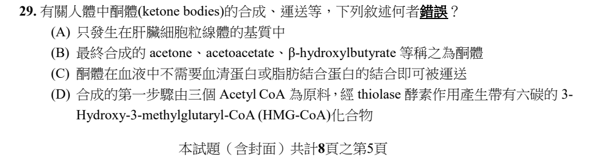
官方採計：A或D 原答案：D
原D，官方更正為A或D，任選其一皆採計
主分類：Ch09 Cellular Respiration and Fermentation
9.6 / The Versatility of Catabolism
目錄行608；條目起始印刷頁182；實際目錄 PDF37
次分類：Ch09 Cellular Respiration and Fermentation
9.6 / Biosynthesis (Anabolic Pathways)
目錄行611；條目起始印刷頁183；實際目錄 PDF37
主分類理由：9.6 / The Versatility of Catabolism：脂肪分解產生acetyl-CoA及酮體作為能量燃料。
次分類理由：9.6 / Biosynthesis (Anabolic Pathways)：acetyl-CoA縮合形成酮體的合成步驟。
科學說明：同年度原答案D，釋疑正式改為A或D。第一步thiolase用兩個acetyl-CoA形成四碳acetoacetyl-CoA，再由HMG-CoA synthase加入第三個acetyl-CoA形成六碳HMG-CoA；D把兩步混合。A的「只」被官方astrocytes產酮證據否定；另讀哺乳幼鼠神經細胞研究，只作物種限定佐證，不冒充正常成人所有細胞定量。官方引PMC51878983原字保留，未把該疑似識別碼誤植當成已下載全文。
來源涵蓋範圍：本地Campbell支援所列分類框架；具名外部事件／機制／科學界線由列示來源補充，實讀範圍見來源紀錄。
教材正文：印刷182／PDF231、印刷183／PDF232
補充來源：S13
另行比較：分解燃料與酮體合成；官方雙答案
釋疑PDF7明列A或D，兩者均入主表；9.6分解及生合成條目各有角色，不能刪去A或把分類待審與科學答案歧義混成一項。
結論：證據確認，分類疑義已解決。完整覆核紀錄
Q30 · 8.4 / Catalysis in the Enzyme’s Active Site 正式分類
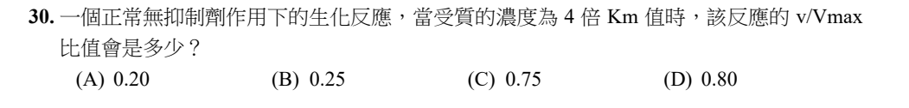
原卷PDF6 · 官方原答案PDF4 · 已核對生物釋疑PDF5下半部–9
官方採計：D 原答案：D
未列於已取得110生物釋疑PDF5下半部–9；依同年度原答案PDF4採計
主分類：Ch08 An Introduction to Metabolism
8.4 / Catalysis in the Enzyme’s Active Site
目錄行526；條目起始印刷頁156；實際目錄 PDF37
主分類理由：8.4 / Catalysis in the Enzyme’s Active Site：酵素受質飽和及速率和濃度的關係。
次分類理由：無另列最小次條目；計算已從4Km獨立重算，非把Km當成最大速率；最小分類8.4活性位點催化／飽和足夠，MM公式由NIH酵素實驗指引補足。
科學說明：官方D。在Michaelis–Menten模型且無抑制劑下，v/Vmax=[S]/(Km+[S])=4/(1+4)=0.80。原題「正常生化反應」不足以保證所有酵素都遵MM式，模型假設另記。
來源涵蓋範圍：本地Campbell支援所列分類框架；具名外部事件／機制／科學界線由列示來源補充，實讀範圍見來源紀錄。
教材正文：印刷156／PDF205、印刷157／PDF206
補充來源：S14
另行比較：酵素速率與自由能
計算已從4Km獨立重算，非把Km當成最大速率；最小分類8.4活性位點催化／飽和足夠，MM公式由NIH酵素實驗指引補足。
結論：證據確認，分類疑義已解決。完整覆核紀錄
Q31 · 11.2 / Receptors in the Plasma Membrane 正式分類
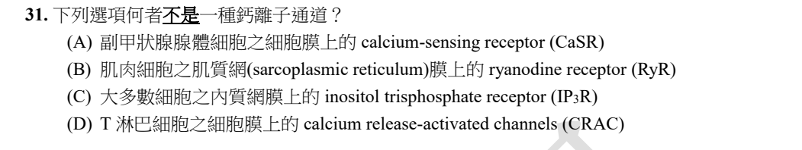
原卷PDF6 · 官方原答案PDF4 · 已核對生物釋疑PDF5下半部–9
官方採計：A 原答案：A
未列於已取得110生物釋疑PDF5下半部–9；依同年度原答案PDF4採計
主分類：Ch11 Cell Communication
11.2 / Receptors in the Plasma Membrane
目錄行708；條目起始印刷頁217；實際目錄 PDF38
次分類：Ch11 Cell Communication
11.3 / Small Molecules and Ions as Second Messengers
本地文字目錄缺少 and Ions as；年度正式名稱依本地12e PDF目錄38印刷223校正，原文字目錄不修改。 目錄行724；條目起始印刷頁223；實際目錄 PDF38
主分類理由：11.2 / Receptors in the Plasma Membrane：比較Ca2+受器與真正通道，CaSR是訊號受器。
次分類理由：11.3 / Small Molecules and Ions as Second Messengers：IP3及Ca2+第二訊使機制補足內膜Ca2+釋放通道。
科學說明：官方A。CaSR是GPCR，不是讓Ca2+通過的孔道；RyR、IP3R及CRAC具有Ca2+通道功能。不能因名稱含receptor就一律不是通道。原文字TOC的Small Molecules and Second Messengers不完整，正式條目依PDF38為Small Molecules and Ions as Second Messengers。
來源涵蓋範圍：本地Campbell支援所列分類框架；具名外部事件／機制／科學界線由列示來源補充，實讀範圍見來源紀錄。
教材正文：印刷217／PDF266、印刷218／PDF267、印刷219／PDF268、印刷224／PDF273、印刷225／PDF274
補充來源：S15
另行比較：受器與ligand-gated channel
原始CaSR克隆研究加上11.2受器及11.3第二訊使，解決名稱誤導；同章次條目保留，PDF實際標題差異另記。
結論：證據確認，分類疑義已解決。完整覆核紀錄
Q32 · 8.4 / Effects of Local Conditions on Enzyme Activity 正式分類
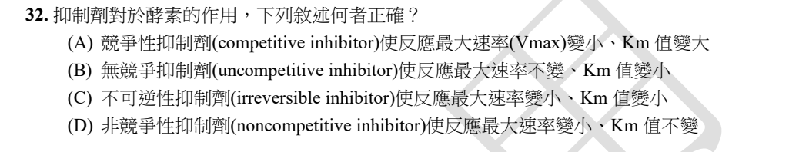
原卷PDF6 · 官方原答案PDF4 · 已核對生物釋疑PDF5下半部–9
官方採計：D 原答案：D
未列於已取得110生物釋疑PDF5下半部–9；依同年度原答案PDF4採計
主分類：Ch08 An Introduction to Metabolism
8.4 / Effects of Local Conditions on Enzyme Activity
目錄行529；條目起始印刷頁157；實際目錄 PDF37
主分類理由：8.4 / Effects of Local Conditions on Enzyme Activity：抑制型態改變酵素速率及表觀Km。
次分類理由：無另列最小次條目；用NIH assay原始指引逐一比較表觀參數，教材8.4抑制劑段落是真實葉條目的正文，不自造「Enzyme Inhibition」為目錄葉。
科學說明：官方D是純非競爭模型：Vmax下降、Km不變。競爭型Vmax不變而Km增加；無競爭型兩者降低。一般mixed inhibition不等於純非競爭；不可逆抑制降低活性酵素量，但不保證Km必降低。
來源涵蓋範圍：本地Campbell支援所列分類框架；具名外部事件／機制／科學界線由列示來源補充，實讀範圍見來源紀錄。
教材正文：印刷157／PDF206、印刷158／PDF207、印刷159／PDF208
補充來源：S14
另行比較：純非競爭、混合及不可逆
用NIH assay原始指引逐一比較表觀參數，教材8.4抑制劑段落是真實葉條目的正文，不自造「Enzyme Inhibition」為目錄葉。
結論：證據確認，分類疑義已解決。完整覆核紀錄
Q33 · 9.6 / Biosynthesis (Anabolic Pathways) 正式分類
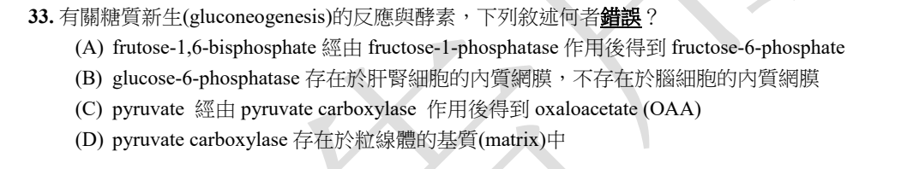
原卷PDF6 · 官方原答案PDF4 · 已核對生物釋疑PDF5下半部–9
官方採計：A 原答案：A
未列於已取得110生物釋疑PDF5下半部–9；依同年度原答案PDF4採計
主分類：Ch09 Cellular Respiration and Fermentation
9.6 / Biosynthesis (Anabolic Pathways)
目錄行611；條目起始印刷頁183；實際目錄 PDF37
次分類：Ch08 An Introduction to Metabolism
8.5 / Localization of Enzymes Within the Cell
目錄行542；條目起始印刷頁161；實際目錄 PDF37
主分類理由：9.6 / Biosynthesis (Anabolic Pathways)：以非醣前驅物合成葡萄糖的酵素步驟。
次分類理由：8.5 / Localization of Enzymes Within the Cell：ER與粒線體區隔解釋反應酵素的位置。
科學說明：官方A。正確酵素是fructose-1,6-bisphosphatase，原印fructose-1-phosphatase及frutose均保留。Pyruvate carboxylase於粒線體將pyruvate轉OAA。B若概括所有G6Pase同工酵素則過廣：2018培養人類胎兒astrocytes研究檢出ER G6Pase-β而非α。這不證明腦是與肝相同的全身葡萄糖輸出器官；B的界線與官方A分開保存。
來源涵蓋範圍：本地Campbell支援所列分類框架；具名外部事件／機制／科學界線由列示來源補充，實讀範圍見來源紀錄。
教材正文：印刷161／PDF210、印刷183／PDF232、印刷184／PDF233
補充來源：S16
另行比較：醣解與糖質新生；同工酵素及細胞區隔
9.6生合成加8.5酵素定位涵蓋四項；腦細胞β同工酵素反例已查證，分類可確定而不聲稱B普遍為真。
結論：證據確認，分類疑義已解決。完整覆核紀錄
Q34 · 9.6 / Biosynthesis (Anabolic Pathways) 正式分類
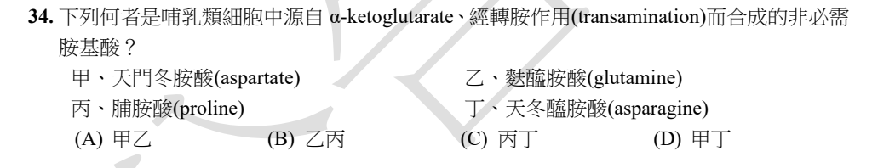
原卷PDF6 · 官方原答案PDF4 · 已核對生物釋疑PDF5下半部–9
官方採計：B 原答案：B
未列於已取得110生物釋疑PDF5下半部–9；依同年度原答案PDF4採計
主分類：Ch09 Cellular Respiration and Fermentation
9.6 / Biosynthesis (Anabolic Pathways)
目錄行611；條目起始印刷頁183；實際目錄 PDF37
次分類：Ch09 Cellular Respiration and Fermentation
9.3 / The Citric Acid Cycle
目錄行575；條目起始印刷頁172；實際目錄 PDF37
主分類理由：9.6 / Biosynthesis (Anabolic Pathways)：中心代謝碳骨架轉成胺基酸的生合成。
次分類理由：9.3 / The Citric Acid Cycle：α-ketoglutarate與oxaloacetate是不同的檸檬酸循環前驅物。
科學說明：官方B（glutamine、proline）。α-ketoglutarate先成glutamate，再可合成glutamine或proline；兩者不是α-ketoglutarate一次轉胺的直接產物。Aspartate由OAA起始、asparagine由aspartate衍生。題文「經轉胺」需按上游碳骨架來源理解，不能抹掉中間步驟。
來源涵蓋範圍：本地Campbell支援所列分類框架；具名外部事件／機制／科學界線由列示來源補充，實讀範圍見來源紀錄。
教材正文：印刷172／PDF221、印刷173／PDF222、印刷183／PDF232
補充來源：S17
另行比較：碳骨架來源與單一步驟轉胺
以glutamate家族與aspartate家族分組確認乙丙，主條目9.6生合成、次9.3TCA前驅物；措辭限制作科學註記。
結論：證據確認，分類疑義已解決。完整覆核紀錄
Q35 · 16.2 / Proofreading and Repairing DNA 正式分類
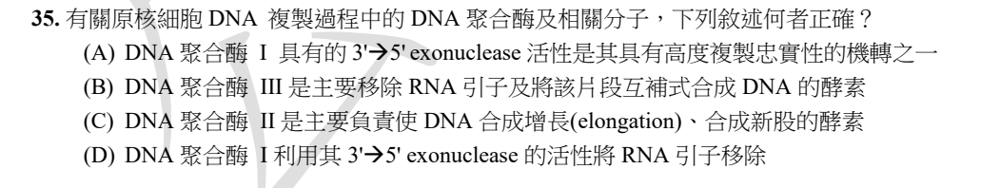
原卷PDF6 · 官方原答案PDF4 · 已核對生物釋疑PDF5下半部–9
官方採計：A 原答案：A
未列於已取得110生物釋疑PDF5下半部–9；依同年度原答案PDF4採計
主分類：Ch16 The Molecular Basis of Inheritance
16.2 / Proofreading and Repairing DNA
目錄行1013；條目起始印刷頁327；實際目錄 PDF39
次分類：Ch16 The Molecular Basis of Inheritance
16.2 / DNA Replication: A Closer Look
目錄行1010；條目起始印刷頁322；實際目錄 PDF39
主分類理由：16.2 / Proofreading and Repairing DNA：DNA聚合酶3′→5′校對功能與忠實度。
次分類理由：16.2 / DNA Replication: A Closer Look：聚合酶I移除引子及聚合酶III主要延長的分工。
科學說明：官方A。Pol I的3′→5′外切酶用於校對，5′→3′外切酶可移除RNA引子；細菌常用E. coli模型由Pol III負責主要延長。原題泛稱原核細胞，不將細菌Pol I/II/III套成古菌全體的同名配置。
來源涵蓋範圍：本地Campbell正文支援所列分類原理；原題及同年度釋疑的假設與措辭限制另見科學說明。
教材正文：印刷322／PDF371、印刷323／PDF372、印刷324／PDF373、印刷325／PDF374、印刷326／PDF375、印刷327／PDF376
補充來源：本題未另列課本外來源
另行比較：DNA引子移除方向與校對方向
對照16.2複製分工及校對兩個實際葉條目；B、C、D各把聚合酶或方向混淆，不以單一5′/3′口訣略過。
結論：證據確認，分類疑義已解決。完整覆核紀錄
Q36 · 18.2 / Mechanisms of Post-transcriptional Regulation 正式分類
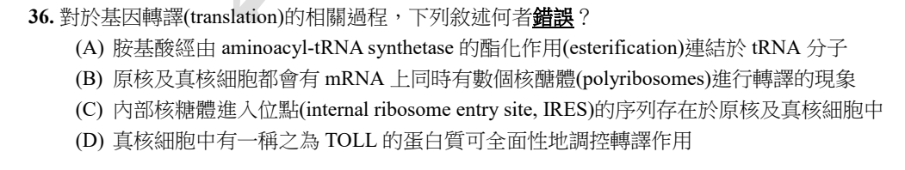
原卷PDF6 · 官方原答案PDF4 · 已核對生物釋疑PDF5下半部–9
官方採計：D 原答案：D
未列於已取得110生物釋疑PDF5下半部–9；依同年度原答案PDF4採計
主分類：Ch18 Regulation of Gene Expression
18.2 / Mechanisms of Post-transcriptional Regulation
目錄行1129；條目起始印刷頁377；實際目錄 PDF39
次分類：Ch17 Gene Expression: From Gene to Protein
17.4 / Molecular Components of Translation
目錄行1069；條目起始印刷頁348；實際目錄 PDF39
次分類：Ch17 Gene Expression: From Gene to Protein
17.4 / Making Multiple Polypeptides in Bacteria and Eukaryotes
目錄行1078；條目起始印刷頁355；實際目錄 PDF39
主分類理由：18.2 / Mechanisms of Post-transcriptional Regulation：轉譯起始調控及整體轉譯量是D的核心錯誤。
次分類理由：17.4 / Molecular Components of Translation：aminoacyl-tRNA synthetase連接胺基酸；17.4 / Making Multiple Polypeptides in Bacteria and Eukaryotes：原核與真核多核糖體比較。
科學說明：官方D，原印TOLL照存；全局轉譯調控常見為TOR／mTOR路徑，不能靜默改字後判真。IRES需保留範圍：2015原始研究證明特定真核病毒結構性IRES可在活細菌啟動轉譯，並不等於所有原核有普遍天然IRES機制。A及B的tRNA連接和多核糖體有教材正文支持。
來源涵蓋範圍：本地Campbell支援所列分類框架；具名外部事件／機制／科學界線由列示來源補充，實讀範圍見來源紀錄。
教材正文：印刷348／PDF397、印刷349／PDF398、印刷355／PDF404、印刷356／PDF405、印刷377／PDF426、印刷378／PDF427、印刷379／PDF428
補充來源：S18
另行比較：TOLL與TOR；IRES在細菌的實驗與普遍性
主要是18.2轉錄後調控，而非先天免疫Toll受器分類；17.4兩個最小次條目保存A/B證據，原字與外推界線未改。
結論：證據確認，分類疑義已解決。完整覆核紀錄
Q37 · 41.3 / Digestion in the Stomach 正式分類
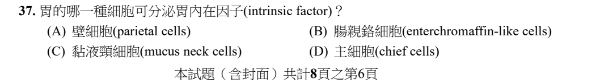
原卷PDF6 · 官方原答案PDF4 · 已核對生物釋疑PDF5下半部–9
官方採計：A 原答案：A
未列於已取得110生物釋疑PDF5下半部–9；依同年度原答案PDF4採計
主分類：Ch41 Animal Nutrition
41.3 / Digestion in the Stomach
目錄行2711；條目起始印刷頁907；實際目錄 PDF46
次分類：Ch41 Animal Nutrition
41.3 / Absorption in the Small Intestine
目錄行2717；條目起始印刷頁909；實際目錄 PDF46
主分類理由：41.3 / Digestion in the Stomach：胃腺壁細胞的分泌物辨識。
次分類理由：41.3 / Absorption in the Small Intestine：Intrinsic factor使小腸能吸收B12的功能連結。
科學說明：官方A。胃壁細胞分泌intrinsic factor與HCl；主細胞主要分泌pepsinogen，黏液頸細胞分泌黏液，ECL細胞與histamine相關。Campbell胃腺圖支援細胞位置，IF/B12具名機制由OpenStax原教材補足，未冒稱本地頁面逐字列IF。
來源涵蓋範圍：本地Campbell支援所列分類框架；具名外部事件／機制／科學界線由列示來源補充，實讀範圍見來源紀錄。
教材正文：印刷907／PDF956、印刷908／PDF957、印刷909／PDF958、印刷910／PDF959
補充來源：S19
Q38 · 17.5 / New Mutations and Mutagens 正式分類
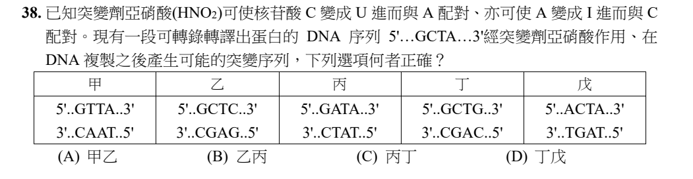
官方採計：D 原答案：D
維持原答案D
主分類：Ch17 Gene Expression: From Gene to Protein
17.5 / New Mutations and Mutagens
目錄行1088；條目起始印刷頁360；實際目錄 PDF39
次分類：Ch17 Gene Expression: From Gene to Protein
17.5 / Types of Small-Scale Mutations
目錄行1085；條目起始印刷頁357；實際目錄 PDF39
次分類：Ch16 The Molecular Basis of Inheritance
16.2 / The Basic Principle: Base Pairing to a Template Strand
目錄行1007；條目起始印刷頁321；實際目錄 PDF39
主分類理由：17.5 / New Mutations and Mutagens：HNO2脫胺造成突變，需沿DNA兩股追蹤。
次分類理由：17.5 / Types of Small-Scale Mutations：鹼基替換型態；16.2 / The Basic Principle: Base Pairing to a Template Strand：複製模板與互補鹼基配對。
科學說明：官方與釋疑皆D（丁戊）。兩股C→U、A→可與C配對的產物經複製固定可得甲GTTA、丁GCTG、戊ACTA，另有GCCA未列；乙與丙屬此機制不支持的顛換（transversion）。甲本身也可能，卻無提供只含有效序列的另一組合。I是inosine核苷，hypoxanthine是鹼基；DNA語境應區分deoxyinosine。固定成正常雙股可能須再一輪複製，不把釋疑步驟壓成單次同時完成。
來源涵蓋範圍：本地Campbell正文支援所列分類原理；原題及同年度釋疑的假設與措辭限制另見科學說明。
教材正文：印刷321／PDF370、印刷357／PDF406、印刷358／PDF407、印刷359／PDF408、印刷360／PDF409
補充來源：本題未另列課本外來源
另行比較：突變股別、轉換與互補配對
完整五欄序列表及釋疑圖均保留；獨立枚舉四個位置的transition並驗算選項，只D兩個皆有效，17.5主分類及兩個次條目確認。
結論：證據確認，分類疑義已解決。完整覆核紀錄
Q39 · 9.4 / The Pathway of Electron Transport 正式分類
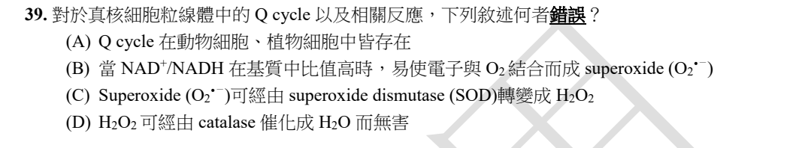
原卷PDF7 · 官方原答案PDF4 · 已核對生物釋疑PDF5下半部–9
官方採計：B 原答案：B
未列於已取得110生物釋疑PDF5下半部–9；依同年度原答案PDF4採計
主分類：Ch09 Cellular Respiration and Fermentation
9.4 / The Pathway of Electron Transport
目錄行582；條目起始印刷頁174；實際目錄 PDF37
次分類：Ch06 A Tour of the Cell
6.5 / Peroxisomes: Oxidation
目錄行371；條目起始印刷頁112；實際目錄 PDF36
主分類理由：9.4 / The Pathway of Electron Transport：Q循環、電子傳遞鏈的電子外漏與ROS。
次分類理由：6.5 / Peroxisomes: Oxidation：過氧化物的分解及catalase功能。
科學說明：官方B。在原題比較下，高NAD+/NADH代表較氧化的pool；原始complex I研究支持較還原NADH pool促進superoxide生成。該complex I研究不能直接冒充complex III Q cycle所有條件的唯一產ROS規律。SOD可產H2O2；catalase完整反應為2H2O2→2H2O+O2，D省略O2的原文保留。
來源涵蓋範圍：本地Campbell支援所列分類框架；具名外部事件／機制／科學界線由列示來源補充，實讀範圍見來源紀錄。
教材正文：印刷112／PDF161、印刷174／PDF223、印刷175／PDF224
補充來源：S20
另行比較：complex I外漏與complex III Q cycle；SOD與catalase
9.4電子傳遞為主，6.5過氧化體支援分解H2O2概念；細胞內並非全部catalase反應必在粒線體，不因題幹位置而誤配胞器。
結論：證據確認，分類疑義已解決。完整覆核紀錄
Q40 · 17.3 / Split Genes and RNA Splicing 正式分類
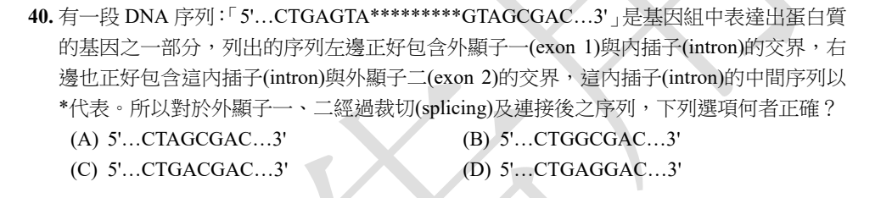
原卷PDF7 · 官方原答案PDF4 · 已核對生物釋疑PDF5下半部–9
官方採計：C 原答案：C
未列於已取得110生物釋疑PDF5下半部–9；依同年度原答案PDF4採計
主分類：Ch17 Gene Expression: From Gene to Protein
17.3 / Split Genes and RNA Splicing
目錄行1062；條目起始印刷頁345；實際目錄 PDF39
主分類理由：17.3 / Split Genes and RNA Splicing：辨認外顯子與內含子交界並剪接RNA。
次分類理由：無另列最小次條目；獨立按兩端邊界重算C並保存RNA/DNA記法區別；17.3 Split Genes and RNA Splicing為充分最小條目。
科學說明：官方C。依題設5′→3′編碼股及常見GT–AG邊界，切點為CTGA／GTA…GTAG／CGAC，接合DNA等價序列CTGACGAC，成熟RNA相應為CUGACGAC。實際剪接對象是前驅RNA而非直接切基因組DNA；不聲稱所有內含子都必為GT–AG。
來源涵蓋範圍：本地Campbell正文支援所列分類原理；原題及同年度釋疑的假設與措辭限制另見科學說明。
教材正文：印刷345／PDF394、印刷346／PDF395、印刷347／PDF396
補充來源：本題未另列課本外來源
另行比較：轉錄、DNA修復與RNA剪接
獨立按兩端邊界重算C並保存RNA/DNA記法區別；17.3 Split Genes and RNA Splicing為充分最小條目。
結論：證據確認，分類疑義已解決。完整覆核紀錄
Q41 · 20.2 / Determining Gene Function 正式分類
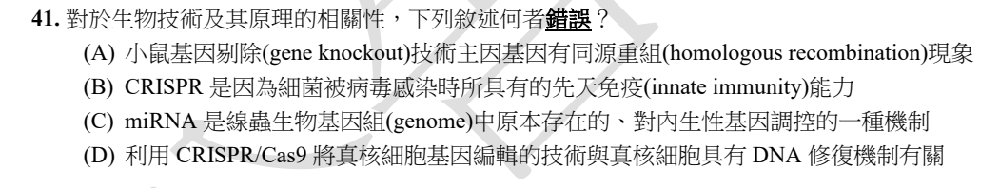
官方採計：B 原答案：B
維持原答案B
主分類：Ch20 DNA Tools and Biotechnology
20.2 / Determining Gene Function
目錄行1254；條目起始印刷頁426；實際目錄 PDF40
次分類：Ch17 Gene Expression: From Gene to Protein
17.5 / Using CRISPR to Edit Genes and Correct Disease-Causing Mutations
目錄行1091；條目起始印刷頁360；實際目錄 PDF39
次分類：Ch19 Viruses
19.2 / Replicative Cycles of Phages
目錄行1199；條目起始印刷頁402；實際目錄 PDF40
次分類：Ch18 Regulation of Gene Expression
18.3 / Effects on mRNAs by MicroRNAs and Small Interfering RNAs
目錄行1136；條目起始印刷頁379；實際目錄 PDF39
主分類理由：20.2 / Determining Gene Function：基因剔除、RNA干擾與編輯用以檢驗基因功能。
次分類理由：17.5 / Using CRISPR to Edit Genes and Correct Disease-Causing Mutations：CRISPR基因編輯的DNA修復機制；19.2 / Replicative Cycles of Phages：噬菌體感染下細菌CRISPR適應性防禦；18.3 / Effects on mRNAs by MicroRNAs and Small Interfering RNAs：miRNA與內生基因調控。
科學說明：官方及釋疑B。CRISPR有來源記憶與序列專一性，屬細菌適應性防禦，不是原題innate。同源重組剔除、miRNA及常規Cas9切割後修復分別說明A/C/D。釋疑引ABE無雙股切斷並不否定「與修復有關」；鹼基編輯與一般核酸酶Cas9機制仍分開，不把所有編輯都硬寫成雙股斷裂。
來源涵蓋範圍：本地Campbell正文支援所列分類原理；原題及同年度釋疑的假設與措辭限制另見科學說明。
教材正文：印刷360／PDF409、印刷361／PDF410、印刷379／PDF428、印刷380／PDF429、印刷402／PDF451、印刷403／PDF452、印刷404／PDF453、印刷426／PDF475、印刷427／PDF476
補充來源：本題未另列課本外來源
另行比較：細菌先天／適應性防禦與基因功能工具
先以本地19.2 CRISPR段確認B用語，再回主題20.2功能技術；保留17.5、19.2、18.3三個實際次條目，非僅看CRISPR一字即單掛病毒章。
結論：證據確認，分類疑義已解決。完整覆核紀錄
Q42 · 28.3 / Alveolates 正式分類
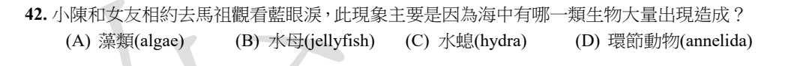
原卷PDF7 · 官方原答案PDF4 · 已核對生物釋疑PDF5下半部–9
官方採計：A 原答案：A
未列於已取得110生物釋疑PDF5下半部–9；依同年度原答案PDF4採計
主分類：Ch28 Protists
28.3 / Alveolates
目錄行1817；條目起始印刷頁604；實際目錄 PDF42
主分類理由：28.3 / Alveolates：馬祖夜光蟲為甲藻，屬囊泡蟲類。
次分類理由：無另列最小次條目；由地點官方來源確認夜光蟲，再對本地28.3 Alveolates；不以海中發光就猜水母。
科學說明：官方A。政府藍眼淚資料指出Noctiluca夜光蟲；甲藻可異營，不能從選項「藻類」推成所有發光者必能光合作用，也不推成每地每次藍光只有同一物種。
來源涵蓋範圍：本地Campbell支援所列分類框架；具名外部事件／機制／科學界線由列示來源補充，實讀範圍見來源紀錄。
教材正文：印刷604／PDF653、印刷605／PDF654、印刷606／PDF655
補充來源：S21
另行比較：藻類、刺胞動物與甲藻
由地點官方來源確認夜光蟲，再對本地28.3 Alveolates；不以海中發光就猜水母。
結論：證據確認，分類疑義已解決。完整覆核紀錄
Q43 · 42.3 / Blood Pressure 正式分類
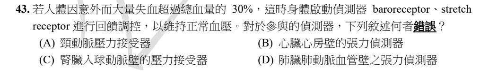
原卷PDF7 · 官方原答案PDF4 · 已核對生物釋疑PDF5下半部–9
官方採計：D 原答案：D
未列於已取得110生物釋疑PDF5下半部–9；依同年度原答案PDF4採計
主分類：Ch42 Circulation and Gas Exchange
42.3 / Blood Pressure
目錄行2789；條目起始印刷頁930；實際目錄 PDF46
次分類：Ch44 Osmoregulation and Excretion
44.5 / Homeostatic Regulation of the Kidney
目錄行2987；條目起始印刷頁994；實際目錄 PDF47
主分類理由：42.3 / Blood Pressure：血壓下降的壓力反射與心血管回饋。
次分類理由：44.5 / Homeostatic Regulation of the Kidney：腎入球小動脈JGA、RAAS及心房ANP共同調節血容量。
科學說明：官方D保留。不能解釋成肺動脈沒有壓力／張力感受器：犬實驗及2020健康人高海拔研究已有肺動脈壓力反射證據。人類研究是低氧/iNO條件，並非大量失血>30%直接試驗，不能據此另定該條件下D必然參與到何種程度。分類可確認，官方排除D的普遍性論證不足另存。
來源涵蓋範圍：本地Campbell支援所列分類框架；具名外部事件／機制／科學界線由列示來源補充，實讀範圍見來源紀錄。
教材正文：印刷930／PDF979、印刷931／PDF980、印刷932／PDF981、印刷994／PDF1043、印刷995／PDF1044、印刷996／PDF1045
補充來源：S22
另行比較：動脈壓力、心房容量、腎RAAS與肺動脈反射
補查原始人與犬研究，排除「不存在」的錯誤理由；主42.3血壓、次44.5腎與容量回饋確定，保留科學未被原題充分限定的界線。
結論：證據確認，分類疑義已解決。完整覆核紀錄
Q44 · 42.7 / Respiratory Pigments 正式分類
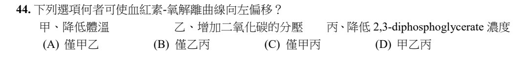
原卷PDF7 · 官方原答案PDF4 · 已核對生物釋疑PDF5下半部–9
官方採計：C 原答案：C
未列於已取得110生物釋疑PDF5下半部–9；依同年度原答案PDF4採計
主分類：Ch42 Circulation and Gas Exchange
42.7 / Respiratory Pigments
目錄行2853；條目起始印刷頁947；實際目錄 PDF46
主分類理由：42.7 / Respiratory Pigments：血紅素對O2親和力及解離曲線移動。
次分類理由：無另列最小次條目；獨立列三因子的方向後確定甲丙；不是把曲線上沿同一條曲線移動當作整條曲線偏移。
科學說明：官方C（甲丙）。低溫、低2,3-DPG提高親和力，曲線左移；增加CO2在一般條件下右移。本地呼吸色素及Bohr效應是分類依據，溫度／DPG方向由生理教材補充。左移指同PO2下飽和度更高，不等於氧供給量無條件更大。
來源涵蓋範圍：本地Campbell支援所列分類框架；具名外部事件／機制／科學界線由列示來源補充，實讀範圍見來源紀錄。
教材正文：印刷947／PDF996、印刷948／PDF997、印刷949／PDF998
補充來源：S23
Q45 · 44.5 / Homeostatic Regulation of the Kidney 正式分類
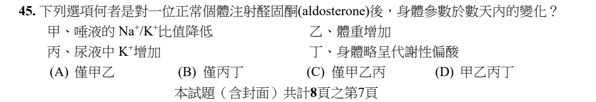
原卷PDF7 · 官方原答案PDF4 · 已核對生物釋疑PDF5下半部–9
官方採計：C 原答案：C
未列於已取得110生物釋疑PDF5下半部–9；依同年度原答案PDF4採計
主分類：Ch44 Osmoregulation and Excretion
44.5 / Homeostatic Regulation of the Kidney
目錄行2987；條目起始印刷頁994；實際目錄 PDF47
主分類理由：44.5 / Homeostatic Regulation of the Kidney：醛固酮調節腎Na回收、K與H排出及水分。
次分類理由：無另列最小次條目；44.5腎調節為主，配合教材及原始唾液研究核對甲乙丙；不以丁的酸鹼誤述掩蓋不同物種及時間範圍。
科學說明：官方C（甲乙丙）。按考試短期模型，Na與水滯留可增重，尿K增加，唾液Na/K下降；H分泌增加偏鹼而非偏酸。外部唾液實驗為袋鼠急性輸注，只支持方向，不冒充正常人數天的直接定量證據。原題未定劑量、飲食與腎功能，數天後存在回饋／aldosterone escape，不保證持續無限增重。
來源涵蓋範圍：本地Campbell支援所列分類框架；具名外部事件／機制／科學界線由列示來源補充，實讀範圍見來源紀錄。
教材正文：印刷994／PDF1043、印刷995／PDF1044、印刷996／PDF1045
補充來源：S24
另行比較：水鹽恆定與酸鹼、時間尺度
44.5腎調節為主，配合教材及原始唾液研究核對甲乙丙；不以丁的酸鹼誤述掩蓋不同物種及時間範圍。
結論：證據確認，分類疑義已解決。完整覆核紀錄
Q46 · 42.7 / Respiratory Pigments 正式分類
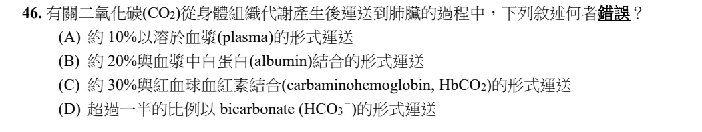
原卷PDF8 · 官方原答案PDF4 · 已核對生物釋疑PDF5下半部–9
官方採計：B 原答案：B
未列於已取得110生物釋疑PDF5下半部–9；依同年度原答案PDF4採計
主分類：Ch42 Circulation and Gas Exchange
42.7 / Respiratory Pigments
目錄行2853；條目起始印刷頁947；實際目錄 PDF46
主分類理由：42.7 / Respiratory Pigments：CO2透過溶解、血紅素及HCO3形式運輸。
次分類理由：無另列最小次條目；42.7呼吸色素包含CO2運輸段；外部原教材與本地原頁對讀，支持主類型且明記教材／原題差異，官方仍B。
科學說明：官方B。主要蛋白結合型是carbaminohemoglobin，不是把約20%指定由血漿albumin攜帶；HCO3為大宗。各資料的百分比取決於計算分母、血樣及條件，不能把10/30/>50當成固定精密比例。本地印刷948實際寫剩餘HCO3約5%結合Hb，與標準CO2形成carbamino的化學敘述及原題比例不同，已實看原頁並保留，不把HCO3結合Hb寫成已查證的carbamino機制。
來源涵蓋範圍：本地Campbell支援所列分類框架；具名外部事件／機制／科學界線由列示來源補充，實讀範圍見來源紀錄。
教材正文：印刷947／PDF996、印刷948／PDF997、印刷949／PDF998
補充來源：S26
另行比較：CO2總含量比例與增量運輸比例；HCO3與carbamino
42.7呼吸色素包含CO2運輸段；外部原教材與本地原頁對讀，支持主類型且明記教材／原題差異，官方仍B。
結論：證據確認，分類疑義已解決。完整覆核紀錄
Q47 · 46.4 / Hormonal Control of the Male Reproductive System 正式分類
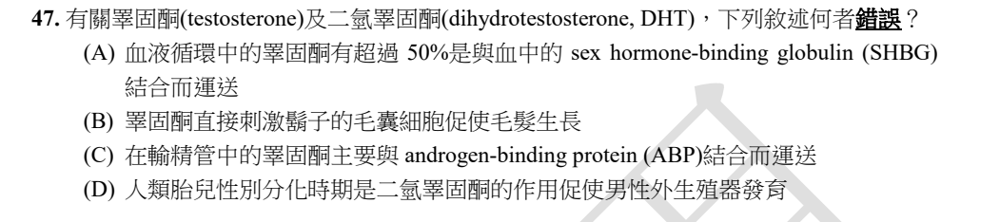
官方採計：B 原答案：B
維持原答案B
主分類：Ch46 Animal Reproduction
46.4 / Hormonal Control of the Male Reproductive System
目錄行3101；條目起始印刷頁1031；實際目錄 PDF48
次分類：Ch45 Hormones and the Endocrine System
45.3 / Sex Hormones
目錄行3042；條目起始印刷頁1014；實際目錄 PDF47
主分類理由：46.4 / Hormonal Control of the Male Reproductive System：Leydig、Sertoli與睪固酮在男性生殖系統的作用及運輸。
次分類理由：45.3 / Sex Hormones：DHT的性分化及第二性徵作用。
科學說明：官方與釋疑B，鬍鬚生長的重要局部雄激素為由T轉換的DHT。A的SHBG「超過50%」非普遍定值，檢驗機構資料常列約44%SHBG、54%albumin。C的輸精管ABP運送依同年度釋疑採計；ABP與SHBG有密切分子關係，不把不同分泌／運輸場域說成毫無關係的蛋白，亦不冒稱已實驗證明所有正常人輸精管定量比例。
來源涵蓋範圍：本地Campbell支援所列分類框架；具名外部事件／機制／科學界線由列示來源補充，實讀範圍見來源紀錄。
教材正文：印刷1014／PDF1063、印刷1015／PDF1064、印刷1031／PDF1080、印刷1032／PDF1081
補充來源：S27
另行比較：血中SHBG、管腔ABP與T轉DHT
以46.4男性生殖內分泌為主及45.3性激素為次；保留官方B、A比例限制及C釋疑的證據邊界。
結論：證據確認，分類疑義已解決。完整覆核紀錄
Q48 · 44.4 / From Blood Filtrate to Urine: A Closer Look 正式分類
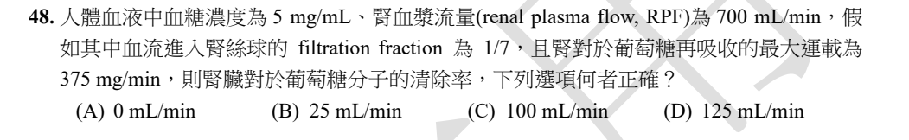
原卷PDF8 · 官方原答案PDF4 · 已核對生物釋疑PDF5下半部–9
官方採計：B 原答案：B
未列於已取得110生物釋疑PDF5下半部–9；依同年度原答案PDF4採計
主分類：Ch44 Osmoregulation and Excretion
44.4 / From Blood Filtrate to Urine: A Closer Look
目錄行2974；條目起始印刷頁987；實際目錄 PDF47
主分類理由：44.4 / From Blood Filtrate to Urine: A Closer Look：過濾、再吸收與最終排出量決定腎清除率。
次分類理由：無另列最小次條目；從原圖所有數字及單位重算四步，B確認。44.4腎小管處理最貼題，未把腎血流量本身誤當清除率。
科學說明：官方B。GFR=700×1/7=100 mL/min；filtered load=100×5=500 mg/min；超過Tm後排出500−375=125 mg/min；clearance=125÷5=25 mL/min。125是質量排出率而非mL/min；依題設Tm硬上限，不額外引入未提供的splay。
來源涵蓋範圍：本地Campbell正文支援所列分類原理；原題及同年度釋疑的假設與措辭限制另見科學說明。
教材正文：印刷987／PDF1036、印刷988／PDF1037、印刷989／PDF1038
補充來源：本題未另列課本外來源
另行比較：RPF、GFR、質量流率與清除率
從原圖所有數字及單位重算四步，B確認。44.4腎小管處理最貼題，未把腎血流量本身誤當清除率。
結論：證據確認，分類疑義已解決。完整覆核紀錄
Q49 · 50.3 / The Vertebrate Visual System 正式分類
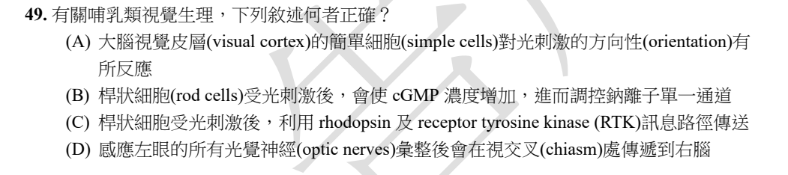
官方採計：A 原答案：A
維持原答案A
主分類：Ch50 Sensory and Motor Mechanisms
50.3 / The Vertebrate Visual System
目錄行3364；條目起始印刷頁1119；實際目錄 PDF49
主分類理由：50.3 / The Vertebrate Visual System：視網膜光轉導、視交叉與皮質視覺處理。
次分類理由：無另列最小次條目；完整釋疑圖文及本地50.3視覺路徑比較，四項皆屬同一最小視覺條目，不需因G蛋白旁及另擴章。
科學說明：官方及釋疑A。Simple cells對邊緣／光條orientation有選擇性，orientation不是物體移動direction。光使rod的cGMP下降、關閉環核苷酸閘控通道；rhodopsin經G蛋白而非RTK。視交叉只有部分纖維交叉，不能把左眼所有訊息全送右腦。
來源涵蓋範圍：本地Campbell正文支援所列分類原理；原題及同年度釋疑的假設與措辭限制另見科學說明。
教材正文：印刷1119／PDF1168、印刷1120／PDF1169、印刷1121／PDF1170、印刷1122／PDF1171、印刷1123／PDF1172
補充來源：本題未另列課本外來源
另行比較：方向選擇性、運動方向與眼別／視野別
完整釋疑圖文及本地50.3視覺路徑比較，四項皆屬同一最小視覺條目，不需因G蛋白旁及另擴章。
結論：證據確認，分類疑義已解決。完整覆核紀錄
Q50 · 19.2 / Replicative Cycles of Animal Viruses 正式分類
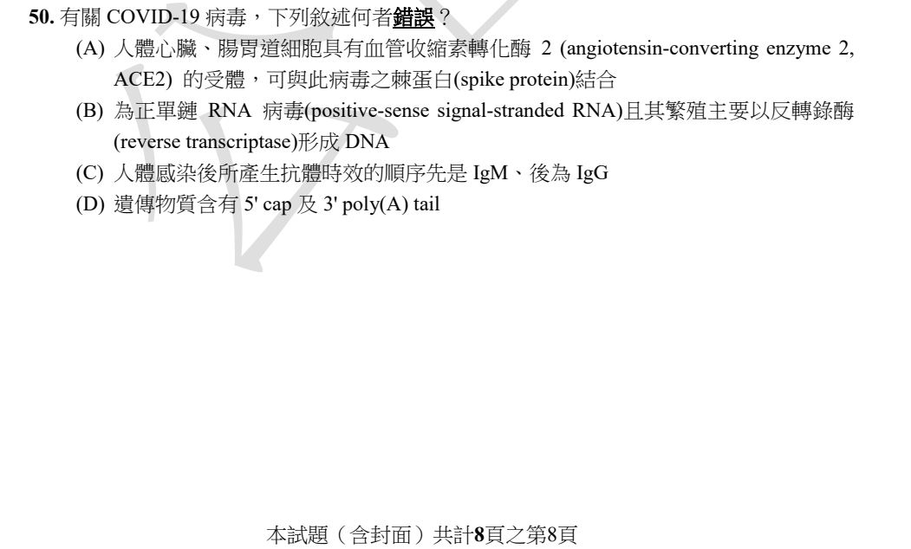
原卷PDF8 · 官方原答案PDF4 · 已核對生物釋疑PDF5下半部–9
官方採計：B 原答案：B
未列於已取得110生物釋疑PDF5下半部–9；依同年度原答案PDF4採計
主分類：Ch19 Viruses
19.2 / Replicative Cycles of Animal Viruses
目錄行1202；條目起始印刷頁404；實際目錄 PDF40
次分類：Ch43 The Immune System
43.3 / B Cells and Antibodies: A Response to Extracellular Pathogens
目錄行2899；條目起始印刷頁964；實際目錄 PDF47
主分類理由：19.2 / Replicative Cycles of Animal Viruses：SARS-CoV-2正股RNA複製與反轉錄病毒的差別。
次分類理由：43.3 / B Cells and Antibodies: A Response to Extracellular Pathogens：感染後抗體類別與時序作為C的對照。
科學說明：官方B。SARS-CoV-2利用RdRp經RNA中間體複製，非以reverse transcriptase形成DNA為主要途徑；有5′cap及3′poly(A)。C的IgM先IgG後非所有感染者通則，2020患者研究已見同時或先後不同型態。原題signal-stranded拼字保留；現代ICTV報告只補機制，不覆寫110官方資料。
來源涵蓋範圍：本地Campbell支援所列分類框架；具名外部事件／機制／科學界線由列示來源補充，實讀範圍見來源紀錄。
教材正文：印刷404／PDF453、印刷405／PDF454、印刷406／PDF455、印刷964／PDF1013、印刷965／PDF1014、印刷966／PDF1015
補充來源：S25、S28
另行比較：正股RNA與反轉錄；抗體普遍規則
病毒結構研究與ICTV機制確認B，抗體原始研究補上C的限制；主19.2動物病毒、次43.3B細胞抗體，分類疑義已解決。
結論：證據確認，分類疑義已解決。完整覆核紀錄
目前篩選沒有符合的題目；本年度總數仍為50題。
補充來源
查證日期：2026-09-09。使用原始研究摘要、官方資料與作者教材，不宣稱所有出版商全文已取得。詳細界線見來源紀錄。
- S01 Nobel官方：1990、1986物理及2014、2017化學獎
1990並非Minsky；其他三年顯微技術配對與題表吻合。
實讀範圍：官方搜尋回傳的得主及獎項段；部分canonical summary直開Internal Error，改以官方索引／學術說明PDF搜尋節錄核實，非全部全文。
原始來源1 · 原始來源2 · 原始來源3 · 原始來源4 - S02 Albertin et al. 2015：The octopus genome and the evolution of cephalopod neural and morphological novelties
Octopus bimaculoides是2015研究的定序物種，支持加州雙斑蛸選項。
實讀範圍：原出版商研究摘要／搜尋節錄與出版日期；未宣稱全文已下載。
原始來源1 - S03 農政／林業官方珍稀植物資料：清水圓柏
官方資料具名清水圓柏及Juniperus chinensis var. taiwanensis；與原卷只到種名的精度分開，歷史保育名單不是自動對應現行IUCN級別。
實讀範圍：官方頁面搜尋回傳的珍稀植物列表、名稱及說明；以歷史題目身分查證，不是法律意見。
原始來源1 · 原始來源2 - S04 Perri et al. 2021：Dire wolves were the last of an ancient New World canid lineage
古DNA研究是題設570萬年及趨同推論的來源背景。
實讀範圍：原始研究摘要及作者機構存錄；限2021研究脈絡，不聲稱已排除後續所有系統發育修訂。
原始來源1 · 原始來源2 - S05 2013 Arabidopsis EXPANSIN-LIKE A2與病原／逆境反應研究
EXLA2突變株對Botrytis等壞死營養病原的感受性改變，不能把expansin家族一概說成與防禦無關。
實讀範圍：PubMed原始研究摘要；限定Arabidopsis EXLA2與該實驗條件，不外推所有家族成員。
原始來源1 - S06 Nobel 2018免疫檢查點官方學術說明
Allison的CTLA-4阻斷抗腫瘤與Honjo團隊PD-1研究；貢獻描述不同於兩人各首次克隆對應分子。
實讀範圍：官方Scientific Background及PD-1發現段；press-release直開失敗後使用可讀官方學術頁。
原始來源1 - S07 GH脂解：人類脂肪研究與STAT5／JAK2原始實驗
人類GH干預及小鼠STAT5／脂肪細胞JAK2研究支持GHR-JAK-STAT軸；ERK等可參與下游，不是排他途徑。
實讀範圍：原始研究摘要及搜尋回傳實驗結果；人類與小鼠證據分記，未聲稱全部全文精讀。
原始來源1 · 原始來源2 · 原始來源3 · 原始來源4 - S08 ASLA 2011獎項與農政2012鰲鼓開園公告
鰲鼓濕地森林園區由中山大學規劃，獲ASLA分析規劃Award of Excellence；官方開園日期2012-11-24。
實讀範圍：ASLA官方獎項列表及農政公告搜尋回傳正文。
原始來源1 · 原始來源2 - S09 Noguchi et al. 1987：Vibrio alginolyticus與河豚腸道TTX
部分菌株在培養條件下產生TTX或相關物質；不能單憑此研究證明所有Vibrio與所有河豚必然互利。
實讀範圍：原出版商摘要；第三方聚合摘要僅用來找到DOI，正式證據URL使用原出版商。
原始來源1 - S10 澳洲海膽荒地原始群集研究
Centrostephanus rodgersii過度取食與海藻林轉成海膽荒地、生物群集減少有原始研究支持。
實讀範圍：原出版商研究摘要／結果搜尋節錄；後於考試，只補科學機制，不冒充110官方材料。
原始來源1 - S11 國家檔案：RCA工廠污染事件
三氯乙烯、四氯乙烯、二氯甲烷等含氯有機化合物是事件具名污染物；多種暴露不能縮成唯一化合物。
實讀範圍：國家檔案事件資料頁及列示污染物段落。
原始來源1 - S12 Bräuer et al. 2019：KDEL受器的pH依賴ER蛋白回收
KDEL的E是Glu；雞KDELR結構、結合與定位實驗支持酸性Golgi辨識及COPI回收。
實讀範圍：PubMed摘要及圖說；PMC7617890直開驗證頁未繞過，改用PubMed。未由摘要推算所有cis-Golgi均恰pH5。
原始來源1 - S13 Thiolase縮合原始研究與幼鼠神經細胞酮體研究
Thiolase兩acetyl-CoA成acetoacetyl-CoA，再加第三個形成HMG-CoA；幼鼠研究支援神經膠細胞產酮的物種限定背景。
實讀範圍：原始酵素結構研究摘要、幼鼠神經細胞研究摘要，及UCL作者學位論文中兩步反應段的搜尋節錄；全篇論文未下載。110官方雙答案本身只據同年度釋疑PDF7。
原始來源1 · 原始來源2 · 原始來源3 - S14 NIH Assay Guidance Manual：Mechanism of Action Assays for Enzymes
MM模型與純competitive、noncompetitive、uncompetitive、mixed概念；純非競爭Vmax降而Km不變。
實讀範圍：作者實驗指引Types of Inhibition與速率／受質相關段落，實際開頁文字核對；不是把所有反應都假定MM。
原始來源1 - S15 Brown et al. 1993：Cloning and characterization of an extracellular Ca2+-sensing receptor from bovine parathyroid
CaSR為G蛋白偶聯受器，與Ca2+通道有本質區別。
實讀範圍：原出版商原始克隆研究摘要／搜尋節錄；牛副甲狀腺實驗身分保留。
原始來源1 - S16 人類astrocyte G6Pase-β原始研究及糖質新生反應資料
2018培養人類胎兒astrocytes表達G6Pase-β而非α，否定腦所有同工酵素一概缺乏；反應資料確認fructose-1,6-bisphosphatase。
實讀範圍：原始研究PubMed完整摘要；PMC直開驗證頁改由PubMed。糖質新生作者教學條目的反應段僅用於標準酵素名稱，不冒稱其為原始實驗。
原始來源1 · 原始來源2 - S17 Stryer／Berg生化教材：Glutamate為glutamine、proline前驅物
Glutamate家族包括glutamine與proline，與OAA衍生aspartate家族分開；必經中間步驟。
實讀範圍：作者原教材在機構館藏的章節標題及生合成反應搜尋節錄；Basic Neurochemistry的glutamine synthetase反應段。不以細菌ProB/ProA酵素名稱直接套哺乳類。
原始來源1 · 原始來源2 - S18 2015原始研究：真核病毒結構性IRES在活細菌中啟動轉譯
特定真核病毒結構性IRES可在活細菌中啟動轉譯，是原題C的實驗界線，非所有細菌內源IRES普遍性證明。
實讀範圍：原始研究摘要／實驗結論及作者實驗室論文頁；未宣稱完整全文逐段讀完。
原始來源1 · 原始來源2 - S19 OpenStax Anatomy and Physiology 2e：The Stomach
Parietal cells分泌HCl及intrinsic factor，後者為小腸B12吸收所需。
實讀範圍：原教材胃腺細胞段，包含壁細胞、主細胞與黏液頸細胞；補足Campbell未詳列IF的部分。
原始來源1 - S20 Kussmaul and Hirst 2006：Complex I產生ROS的機制
牛心complex I的NADH pool還原程度與superoxide生成相關；不是complex III Q cycle所有情況的直接實驗。
實讀範圍：原始研究摘要及研究結果搜尋節錄；明記complex I及物種來源。
原始來源1 - S21 馬祖風景區官方：藍眼淚與夜光蟲
馬祖藍眼淚以Noctiluca夜光蟲為主要說明生物，屬甲藻；可異營攝食。
實讀範圍：風景區官方生態介紹中物種及發光說明段。
原始來源1 · 原始來源2 - S22 肺動脈壓力反射：人類2020及犬原始實驗
人類高海拔低氧與iNO降低肺動脈壓時交感輸出下降；犬壓力實驗亦見肺動脈反射。不能聲稱肺動脈無此感受器，也不能冒充人體失血30%的直接實驗。
實讀範圍：人類PubMed摘要（條件、PASP、MSNA與結論）實際開頁核對；犬原始研究摘要及方法物種段。保留每項實驗的物種與條件。
原始來源1 · 原始來源2 · 原始來源3 - S23 Pittman 2011：Regulation of Tissue Oxygenation — Oxygen Transport
升溫、升CO2、升H+及升2,3-DPG使解離曲線右移，降低則左移。
實讀範圍：原作者專書Allosteric Effectors of Oxygen Binding to Hemoglobin段；非原始單一臨床試驗。
原始來源1 - S24 醛固酮：唾液原始輸注研究及腎水鹽／酸鹼教材
袋鼠醛固酮輸注實驗唾液Na/K下降；原教材支持腎Na回收與K、H排出及酸鹼相關作用，不能把不同物種數小時推成正常人數天定量。
實讀範圍：原始唾液實驗摘要，OpenStax原教材的腎離子與酸鹼段；原題仍按短期模型採計C。
原始來源1 · 原始來源2 · 原始來源3 - S25 ICTV Coronaviridae報告與SARS-CoV-2 RdRp結構原始研究
冠狀病毒正股RNA含cap與poly(A)，RdRp形成RNA複製中間體；非主要經反轉錄DNA途徑。
實讀範圍：ICTV官方病毒基因體／複製表及RdRp原始研究摘要；ICTV頁面較新分類名稱不代入原題名稱。
原始來源1 · 原始來源2 - S26 OpenStax Anatomy and Physiology 2e：Transport of Gases
教材列溶解約7–10%、HCO3約70%、carbaminohemoglobin約20%；支持三種主要形式，未支持albumin攜帶20%。
實讀範圍：原教材Carbon Dioxide Transport全文子段實讀；其百分比與原題約30%及本地Campbell約5%明確分開，不強行同值。
原始來源1 - S27 Quest Diagnostics官方檢驗教育：Testosterone與結合蛋白
常用分配約44%SHBG、54%albumin，超過50%SHBG不應作無條件定值；DHT與男性性徵需與T區分。
實讀範圍：檢驗機構官方FAQ的結合比例段；不是獨立人類輸精管ABP運送原始實驗。C仍明確只按110官方釋疑採計。
原始來源1 - S28 Long et al. 2020：Antibody responses to SARS-CoV-2 in patients with COVID-19
患者IgG與IgM可同時或先後不同時間出現，原題C先IgM後IgG不是普遍個體通則。
實讀範圍：原始研究摘要：285位患者及seroconversion時序描述；不外推其他病原或所有免疫狀態。
原始來源1